Concentration-response experiments are rarely a single clean series. Replicates sit together in tanks, vials or chambers; the same experiment may be run on several genotypes, in different seasons, or under a second stressor. Those structures are not usually of interest in themselves, but ignoring them means treating observations as independent when they are not.
bayesnec offers two distinct routes, and choosing
between them is the first decision to make:
ogl(), pgl() and (par | group) —
which keep every observation in one fit and let the
grouping shift parts of the curve;bnec_group() — which gives every level its own complete
model set, and lets the functional form differ between
levels.They answer different questions and suit different data. The bioluminescent assay below uses both, on the same dataset.
Every concentration series used here spans between two and four
orders of magnitude, so each figure is drawn on a log axis.
autoplot() and ggbnec_data() return the
predictor on the scale it was recorded on, having already inverted any
transformation written inside crf(). The axis is therefore
set by transforming the scale, and not by transforming the values or the
breaks. The same scale object serves every figure.
log_x <- scale_x_continuous(transform = "log10",
labels = function(x) signif(x, 2))The distinction that matters is whether the grouping sits within a concentration or across it, because it decides which route applies.
A grouping within a concentration occurs at one concentration only — replicate tanks, vials, chambers. The group cannot have its own concentration-response curve, because it spans no concentrations. What it can do is shift the response level up or down, and that is a group-level term.
A grouping across concentration spans the whole concentration range —
different genotypes, chemicals, seasons. Every level could have
its own curve, and the question is usually whether it does. That is
bnec_group().
ogl(), (par | group) and pgl()
are written into a bayesnecformula the same way and produce
three different brms formulae from the same
concentration-response equation. They are generated below by
make_brmsformula(), the function bnec() uses
to translate a bayesnecformula into the non-linear
brms formula passed to Stan, so what is shown is the model
that is fitted rather than a description of it. nec4param
is used throughout, because every parameter a group-level term can be
placed on — top, bot, beta and
nec — is present in it.
make_brmsformula() resolves the names in a formula
against a data frame, and needs nothing else from it, so the frame below
is a small synthetic one. No dataset is introduced here: the section is
about the syntax, and a real experiment would bring with it an argument
the syntax does not depend on. The response is a proportion and is
modelled with a Beta family, with the link stated
explicitly because Beta() defaults to logit
and bnec() fits every family on the identity link.
set.seed(228)
gdat <- data.frame(
conc = rep(c(0.1, 0.3, 1, 3, 10, 30), each = 4),
response = rep(c(0.90, 0.88, 0.70, 0.40, 0.15, 0.05), each = 4) +
rnorm(24, 0, 0.02),
group = factor(rep(letters[1:4], times = 6))
)
gfam <- Beta(link = "identity")
brms_form <- function(formula, family = gfam) {
make_brmsformula(bayesnecformula(formula), data = gdat,
family = family)[["nec4param"]]
}ogl() gives each level of the grouping one deviation
applied to the fitted mean. The whole curve is displaced up or down and
its shape is identical in every level, which makes it the analogue of a
random intercept in a linear model.
brms_form(response ~ crf(conc, "nec4param") + ogl(group))
#> response ~ bnecmu * exp(ogl)/(1 - bnecmu + bnecmu * exp(ogl))
#> bnecmu ~ bot + (top - bot) * exp(-exp(beta) * (conc - nec) * step(conc - nec))
#> bot ~ 1
#> top ~ 1
#> beta ~ 1
#> nec ~ 1
#> ogl ~ 1 + (1 | group)The concentration-response equation appears intact as
bnecmu, and the deviation ogl is applied to it
through
bnecmu * exp(ogl) / (1 - bnecmu + bnecmu * exp(ogl)), which
adds ogl to the log-odds of the mean. top,
bot, beta and nec each retain a
population-level intercept and nothing more, so one displacement per
level is the whole of what ogl() estimates. The
multiplicative form is used because a Beta response
restricts the mean to
;
vignette("example3"), section “Priors for group-level
parameters”, states which deviations are applied that way and why.
(par | group) places a deviation on one named parameter
of the equation and leaves the others population-level, so the curve
changes shape in one specified way rather than being displaced as a
whole.
brms_form(response ~ crf(conc, "nec4param") + (nec | group))
#> response ~ bot + (top - bot) * exp(-exp(beta) * (conc - nec) * step(conc - nec))
#> bot ~ 1
#> top ~ 1
#> beta ~ 1
#> nec ~ 1 + (1 | group)nec gains + (1 | group) and nothing else in
the equation changes. The threshold is on the scale of the predictor and
is not restricted by the response distribution, so the deviation is
added to it directly.
A parameter that is restricted is written differently.
brms_form(response ~ crf(conc, "nec4param") + (bot | group))
#> response ~ bnecbot + (top - bnecbot) * exp(-exp(beta) * (conc - nec) * step(conc - nec))
#> bot ~ 1
#> top ~ 1
#> beta ~ 1
#> nec ~ 1
#> botgl ~ 0 + (1 | group)
#> bnecbot ~ bot * exp(botgl)/(1 - bot + bot * exp(botgl))bot keeps its population-level intercept, its prior and
its meaning. The deviation is the separate non-linear parameter
botgl, which has no intercept of its own —
0 + (1 | group) — and is therefore centred on zero, and
bnecbot recombines the two on the log-odds scale.
brms reports the standard deviation of that deviation as
sd(botgl_Intercept), which is read as a log-odds and not as
a proportion.
The term names a parameter, and not every equation of a model set has
every parameter: bot is a parameter of
nec4param and not of nec3param. Where the
named parameter is absent the (par | group) term is dropped
for that equation and the fit proceeds without it. The drop is reported
by a message, which is easily lost among Stan’s compilation output.
check_formula() reports it for every equation of the set
before any model is fitted.
invisible(check_formula(
bayesnecformula(response ~ crf(conc, c("nec3param", "nec4param")) +
(bot | group)),
data = gdat, run_par_checks = TRUE
))
#> Performing single parameter checks on all models...
#> The parameter(s) "bot" not valid parameters in nec3param. If this was a mistake, check ?models and ?show_params, otherwise ignore.pgl() places a deviation on every parameter of the
equation at once, so each level is given its own curve shrunk towards a
common one, and the parameter names of the equation do not have to be
known in advance.
brms_form(response ~ crf(conc, "nec4param") + pgl(group))
#> response ~ bnecbot + (bnectop - bnecbot) * exp(-exp(beta) * (conc - nec) * step(conc - nec))
#> bot ~ 1
#> top ~ 1
#> beta ~ 1 + (1 | group)
#> nec ~ 1 + (1 | group)
#> botgl ~ 0 + (1 | group)
#> bnecbot ~ bot * exp(botgl)/(1 - bot + bot * exp(botgl))
#> topgl ~ 0 + (1 | group)
#> bnectop ~ top * exp(topgl)/(1 - top + top * exp(topgl))All four parameters gain a group-level term. beta and
nec are on unbounded scales and take theirs additively;
top and bot are restricted by the response
distribution and take theirs through topgl and
botgl in the same transformed form as above. Four
group-level standard deviations are estimated from however many levels
the grouping has, which is the widest of the three claims and the one
the data are least likely to support.
Under gaussian() the mean is on the real line and no
transformation is needed, so all three terms appear as plain additive
brms terms.
brms_form(response ~ crf(conc, "nec4param") + ogl(group), family = gaussian())
#> response ~ ogl + bot + (top - bot) * exp(-exp(beta) * (conc - nec) * step(conc - nec))
#> bot ~ 1
#> top ~ 1
#> beta ~ 1
#> nec ~ 1
#> ogl ~ 1 + (1 | group)
brms_form(response ~ crf(conc, "nec4param") + (nec | group), family = gaussian())
#> response ~ bot + (top - bot) * exp(-exp(beta) * (conc - nec) * step(conc - nec))
#> bot ~ 1
#> top ~ 1
#> beta ~ 1
#> nec ~ 1 + (1 | group)
brms_form(response ~ crf(conc, "nec4param") + pgl(group), family = gaussian())
#> response ~ bot + (top - bot) * exp(-exp(beta) * (conc - nec) * step(conc - nec))
#> bot ~ 1 + (1 | group)
#> top ~ 1 + (1 | group)
#> beta ~ 1 + (1 | group)
#> nec ~ 1 + (1 | group)ogl is added to the equation rather than applied to its
odds, and pgl() reduces to + (1 | group) on
each of the four parameters. Compared with the Beta
formulae above, this isolates the transformation as a consequence of the
support of the response distribution rather than of the grouping
term.
The within and across distinction decides which of the three terms applies, and the decision follows from the design rather than from preference.
A grouping whose levels each sit at one concentration — replicate
tanks, vessels or chambers — admits only a displacement. Such a level
spans no part of the curve, so there is nothing in the data from which
to estimate a difference in shape, and ogl() is the
term.
A grouping whose levels each span the whole concentration series —
genotypes, plates, separate runs of the same test — admits a difference
in shape. Where there is a hypothesis about which feature of the curve
varies, (par | group) states it, and
(nec | group) is the common case: the threshold differs
between levels and the rest of the curve is shared. Where there is no
such hypothesis, pgl() fits a separate random curve per
level. Five levels is the conventional minimum for estimating one
group-level standard deviation, and pgl() estimates one per
parameter.
Levels that are fixed and of interest in themselves — a set of
herbicides, or a set of species — are not a random grouping. They are
not a sample from a larger population, so shrinking them towards a
common curve answers a different question from the one being asked, and
their functional forms may differ from one another.
bnec_group() fits each level separately and is the route
for these.
A bioluminescent bacterial toxicity assay for tropical marine environments
The lum31 dataset records acute copper and zinc toxicity
tests using the bioluminescent bacterial assay of Luter et al. (2025), reported at https://doi.org/10.1002/tox.70003. The test organism is
Vibrio azureus strain Lum-31, a tropical bacterium chosen
because the established bacterial assays use the temperate
Aliivibrio fischeri and are run at temperatures a tropical
marine assessment cannot use; these tests are at 27 °C.
Light is the response because light is a by-product of metabolism. Luciferase oxidises reduced flavin mononucleotide and an aldehyde in the presence of oxygen, and the cell regenerates the substrate through further oxidation, so anything that interferes with electron transport reduces the light emitted. Nothing separate is scored: the endpoint is the reading itself, in relative light units.
Two features of the assay design decide how the response behaves, and both matter below. Twenty microlitres of cell suspension goes into 180 µL of sample in a white 96-well plate. Luter et al. (2025) chose that cell density to keep control luminescence above 250 000 relative light units while still resolving an effect threshold, so the lower end of the control readings is a design target rather than an accident. The second is that the plate reader sets its gain per read, which is where the between-plate differences come from.
Copper and zinc are reference toxicants here rather than contaminants under investigation, run repeatedly to establish that the assay is reproducible: sixteen copper plates and seventeen zinc plates.
data(lum31)
str(lum31)
#> 'data.frame': 2904 obs. of 10 variables:
#> $ toxicant : Factor w/ 2 levels "Cu","Zn": 1 1 1 1 1 1 1 1 1 1 ...
#> $ batch : Factor w/ 5 levels "19Mar24","28Mar24",..: 1 1 1 1 1 1 1 1 1 1 ...
#> $ plate : Factor w/ 33 levels "Cu 19Mar24 Rep1B",..: 1 1 1 1 1 1 1 1 1 1 ...
#> $ conc_group: Factor w/ 363 levels "Cu 19Mar24 Rep1B-c01",..: 1 1 1 1 2 2 2 2 3 3 ...
#> $ well : Factor w/ 1452 levels "Cu 19Mar24 Rep1B-w01",..: 1 2 3 4 5 6 7 8 9 10 ...
#> $ minutes : int 15 15 15 15 15 15 15 15 15 15 ...
#> $ conc : num 0.003 0.003 0.003 0.003 0.0137 ...
#> $ rlu : num 1064085 1107620 990758 1067172 1032736 ...
#> $ censoring : chr "none" "none" "none" "none" ...
#> $ rlu_cens : num 1064085 1107620 990758 1067172 1032736 ...The design supplies replication at three scales, and each is used in turn:
conc_group — the four replicate wells
at one concentration on one plate. Every well of a concentration group
sits at the same concentration, so the group spans no part of the curve
and admits only a displacement.plate — one complete test: eleven
measured concentrations by four wells, read twice. A plate spans the
whole series, so it could in principle differ in the shape of its curve
and not only in its level.toxicant by minutes —
copper against zinc, at 15 and 30 minutes of exposure. These are four
fixed arms chosen for their interest rather than a sample from a
population of arms, so they are levels rather than a grouping.
lum31 |>
group_by(toxicant, minutes) |>
summarise(plates = n_distinct(plate), conc_groups = n_distinct(conc_group),
wells = n_distinct(well), rows = n(), .groups = "drop")
#> # A tibble: 4 × 6
#> toxicant minutes plates conc_groups wells rows
#> <fct> <int> <int> <int> <int> <int>
#> 1 Cu 15 16 176 704 704
#> 2 Cu 30 16 176 704 704
#> 3 Zn 15 17 187 748 748
#> 4 Zn 30 17 187 748 748Every well of every plate is drawn below, one panel per toxicant and
exposure time, with the wells of one plate joined at their concentration
means. The response is rlu_cens, which is the recorded
luminescence with the readings that reached the instrument’s floor
marked as censored; Preparing the response sets out why they
are treated that way.
ggplot(lum31, aes(x = conc, y = rlu_cens, group = plate,
colour = toxicant)) +
geom_point(alpha = 0.3, size = 1) +
stat_summary(fun = mean, geom = "line", linewidth = 0.3) +
facet_wrap(~toxicant + minutes, scales = "free", labeller = label_both) +
log_x +
# One hue per toxicant, kept the same in every figure of this case study, so
# that a panel here and a density below can be read as the same arm. The
# facet strip names it, so the legend would repeat the strip.
scale_colour_hue(guide = "none") +
theme_classic() +
labs(x = "Dissolved metal (mg/L)", y = "Relative light units")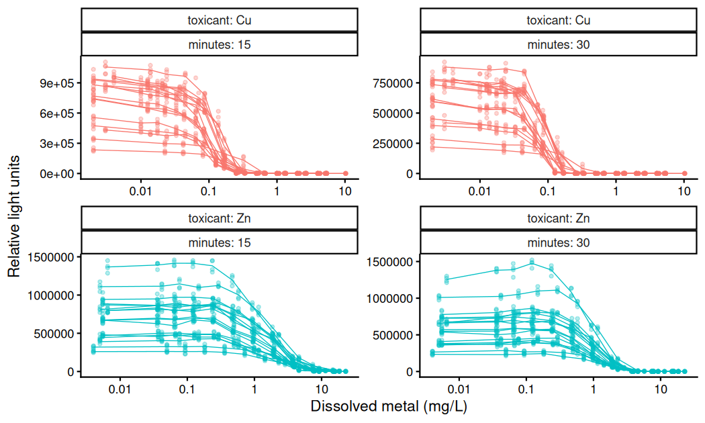
plot of chunk fig-lum31-raw
Luminescence stays near its control level over the lower part of each series and then declines across about a tenfold range of concentration. It is below half the control by 0.084 mg/L of copper at 15 minutes and 0.064 at 30 minutes, and by 1.9 and 0.93 mg/L of zinc. Zinc is therefore the weaker of the two by roughly an order of magnitude, and both are more potent at the longer exposure. At the top concentrations of every arm the readings reach a floor.
Two further features are taken up below. The plates of one arm are separated vertically by a factor of four to five at the control. And at low zinc concentrations luminescence rises above the control level before declining.
well identifies an individual well, which is read at
both exposure times. Concentrations are measured dissolved metal rather
than nominal, and each batch was dosed separately, so the concentration
values differ between batches and the plates are not on a common
grid.
The analysis published with these data divides each plate twice
before fitting. Luter et al. (2025) state
it in the methods — the median of the four control wells is used to
model the inverse proportion of light lost relative to the control, and
that quantity is then divided by the maximum luminescence — and
bayesNEC_30m_final.R in the accompanying repository does
it:
Rep1B_y30_qtox = (1 - (median(CuDat1[1:4, 4]) - Rep1B_y30) / median(CuDat1[1:4, 4]))
Rep1B_y30_qtoxB = Rep1B_y30_qtox / max(Rep1B_y30_qtox)The first line simplifies to the reading divided by the median of the plate’s four control wells. The second divides by the plate maximum, which forces exactly one observation to 1.000.
Dividing by a control mean is standard practice in ecotoxicology, and on this assay the first division has a clear physical motivation. The plate reader applies auto-scale gain adjustment, set per read, so absolute luminescence is a property of the read rather than of the assay. Median control-well luminescence differs several-fold between plates of the same batch:
lum31 |>
filter(toxicant == "Zn", minutes == 15) |>
group_by(batch, plate) |>
filter(conc == min(conc)) |>
summarise(control_rlu = median(rlu_cens), .groups = "drop_last") |>
summarise(plates = n(), lowest = min(control_rlu), highest = max(control_rlu),
ratio = round(max(control_rlu) / min(control_rlu), 1), .groups = "drop")
#> # A tibble: 5 × 5
#> batch plates lowest highest ratio
#> <fct> <int> <dbl> <dbl> <dbl>
#> 1 19Mar24 4 396861 1110610. 2.8
#> 2 28Mar24 3 780502 1366046. 1.8
#> 3 5Apr24 3 667941 924912 1.4
#> 4 23Apr24 5 458610. 918672. 2
#> 5 1Oct24 2 260432. 322856 1.2Gain is a per-plate multiplicative constant, so dividing by a per-plate quantity does remove it. The difficulty is what the divisor is.
Ritz et al. (2026) show that dividing a response by an estimated control mean induces correlation between every observation sharing the denominator, and that ignoring it biases effect doses downwards and gives intervals that are too narrow. In their simulation, fitting the normalised response as though the observations were independent gave ED10 bias of 2.6 to 6.8 per cent and coverage of 0.88 to 0.91 against a nominal 0.95, while modelling the raw rates gave 0.7 to 2.1 per cent and 0.94 to 0.96. They state that weights do not remedy it, and that per-curve normalisation on few control measurements is the worst configuration. This assay normalises each plate by four control wells.
Their recommended approach is to model the raw response and derive
inhibition from the fitted control, treating the control level as a
parameter. In bayesnec that parameter is top,
and ecx() is measured from the modelled control, so a
bnec() fit on raw luminescence is that approach.
The published estimates are what the fits in this case study are read against. Luter et al. (2025) fitted each plate separately on the normalised response. For copper they report EC50s averaging 0.109 mg/L at 15 minutes, with a standard deviation of 0.036 and a range of 0.069 to 0.201 over sixteen plates, and 0.085 at 30 minutes. For zinc, 1.546 at 15 minutes (0.284, 1.207 to 2.076 over seventeen plates) and 1.013 at 30 minutes. The spread across plates is what a per-plate analysis leaves as variation between tests, and what a plate term estimates instead.
A group-level term on the control parameter targets the same
per-plate constant the division removes, and propagates its uncertainty
instead of conditioning on a point estimate. Generating the
brms formula shows the form directly:
gfam <- Gamma(link = "identity")
make_brmsformula(
bayesnecformula(rlu_cens | cens(censoring) ~ crf(log(conc), "nec3param") + (top | plate)),
data = subset(lum31, toxicant == "Zn" & minutes == 15), family = gfam
)
#> $nec3param
#> rlu_cens | cens(censoring) ~ bnectop * exp(-exp(beta) * (log(conc) - nec) * step(log(conc) - nec))
#> top ~ 1
#> beta ~ 1
#> nec ~ 1
#> topgl ~ 0 + (1 | plate)
#> bnectop ~ top * exp(topgl)bnectop ~ top * exp(topgl) with
topgl ~ 0 + (1 | plate) is a per-plate multiplicative
factor on the curve, which is the form gain takes. ogl()
gives the same multiplicative structure applied to the whole fitted
value rather than to top alone:
make_brmsformula(
bayesnecformula(rlu_cens | cens(censoring) ~ crf(log(conc), "nec3param") + ogl(plate)),
data = subset(lum31, toxicant == "Zn" & minutes == 15), family = gfam
)
#> $nec3param
#> rlu_cens | cens(censoring) ~ bnecmu * exp(ogl)
#> bnecmu ~ top * exp(-exp(beta) * (log(conc) - nec) * step(log(conc) - nec))
#> top ~ 1
#> beta ~ 1
#> nec ~ 1
#> ogl ~ 1 + (1 | plate)The distinction matters once the equation has a lower asymptote. Gain
multiplies the whole curve, bot included, so
ogl() is the match; (top | plate) scales
top and leaves bot common between plates. For
a three-parameter equation whose curve is top times a
function of the predictor the two coincide.
A divisor that is one constant for the whole dataset is only a change of units. It uses no estimate and induces no correlation, so it is not what Ritz et al. (2026) object to. This assay nonetheless does not use one, and the reason is a property of the instrument rather than a preference.
The benefit of normalisation is not the divisor itself. It is that
every curve’s control lands near the top of a bounded scale, where a
Beta variance mu * (1 - mu) / (1 + phi) is
small, so the upper asymptote is well determined and any effect
concentration measured from it is stable. That requires the curves to
share a scale, and under per-read gain they do not:
lum31 |>
filter(toxicant == "Zn", minutes == 15) |>
group_by(plate) |>
filter(conc == min(conc)) |>
summarise(control_share = median(rlu_cens) / max(lum31$rlu), .groups = "drop") |>
summarise(plates = n(), lowest = round(min(control_share), 3),
highest = round(max(control_share), 3),
middle_of_scale = sum(control_share < 0.61))
#> # A tibble: 1 × 4
#> plates lowest highest middle_of_scale
#> <int> <dbl> <dbl> <int>
#> 1 17 0.171 0.898 15Dividing by the largest reading in the dataset leaves most plates in
the middle of the interval, where a Beta variance is at its
largest, so the stability a normalised analysis relies on is not
obtained. No universal ceiling in luminance exists for the same reason:
the supplementary material of Luter et al.
(2025) measures 44 technical replicates of undosed cells, but at
one gain, so it bounds that read only.
Gain and genuine plate-to-plate biological variation are confounded in the estimated per-plate factor, and nothing in these data separates them. This does not affect the N(S)EC or an ECx, for which both are nuisance plate effects, but the plate-level standard deviation is not a biological quantity and should not be reported as one.
A related caution from Ritz et al.
(2026) applies to the scope of an ogl(plate) term.
Normalising, or sharing a plate term, is legitimate only within curves
of the same treatment. Plates within one toxicant-by-exposure-time arm
qualify. A plate term is not placed across the copper-versus-zinc or
15-versus-30-minute contrasts; those are handled by
bnec_group() below.
The argument for modelling the predictor on a transformed scale is
made in vignette("example3") and is not repeated here.
Two properties of the recorded response have to be settled before any fit, and both follow from how the instrument works.
Readings were blank-corrected against wells of artificial seawater,
so a well emitting less light than the blank gives a negative value. The
source records replaced such a value by zero. rlu reports
every reading as it stands, including one that escaped the
replacement:
lum31 |>
group_by(toxicant, minutes) |>
summarise(rows = n(), zero = sum(rlu == 0), negative = sum(rlu < 0),
per_cent = round(100 * mean(rlu <= 0), 1), .groups = "drop")
#> # A tibble: 4 × 6
#> toxicant minutes rows zero negative per_cent
#> <fct> <int> <int> <int> <int> <dbl>
#> 1 Cu 15 704 106 0 15.1
#> 2 Cu 30 704 197 0 28
#> 3 Zn 15 748 6 1 0.9
#> 4 Zn 30 748 77 0 10.3That surviving negative is the evidence for how the zeros arise. Luminescence cannot be negative, so a zero here is a blank-corrected negative rather than an absence of light, and the process generating it is measurement noise about a small positive value. These readings are therefore left-censored. A hurdle would assert a distinct zero-generating process, which is not what happened.
A Gamma likelihood requires a strictly positive response
and brms refuses the fit at data validation otherwise, so
the censoring bound cannot be zero. rlu_cens and
censoring supply the censored form, with the bound set to
the smallest positive reading on the plate — a plate property, because
gain is set per plate, and pooled over the two exposure times because
the two reads of one plate share a gain setting.
lum31 |>
filter(toxicant == "Zn", minutes == 15) |>
count(censoring)
#> censoring n
#> 1 left 7
#> 2 none 741The estimates are more sensitive to this bound where more readings reach the floor, which is 0.9 per cent for zinc at 15 minutes and 28 per cent for copper at 30. No detection limit is recorded for the instrument, so the bound is an inference from the readings rather than a stated resolution.
A Gamma with an identity link has a constant coefficient
of variation, and these data do not. Within-cell variation, pooled over
the seventeen plates at each concentration, rises steadily as the
response falls:
zn15 <- droplevels(subset(lum31, toxicant == "Zn" & minutes == 15))
zn15 |>
mutate(rank = as.integer(sub(".*-c", "", as.character(conc_group)))) |>
group_by(rank, plate) |>
summarise(mean_rlu = mean(rlu_cens), cv = sd(rlu_cens) / mean(rlu_cens),
.groups = "drop_last") |>
group_by(rank) |>
summarise(mean_rlu = signif(mean(mean_rlu), 3), cv = round(median(cv), 3),
.groups = "drop")
#> # A tibble: 11 × 3
#> rank mean_rlu cv
#> <int> <dbl> <dbl>
#> 1 1 704000 0.051
#> 2 2 713000 0.055
#> 3 3 714000 0.056
#> 4 4 717000 0.042
#> 5 5 718000 0.028
#> 6 6 601000 0.058
#> 7 7 459000 0.057
#> 8 8 305000 0.082
#> 9 9 92700 0.117
#> 10 10 17600 0.201
#> 11 11 3560 0.361One shape parameter cannot serve a series whose own coefficient of
variation runs from about 0.05 at the control to about 0.36 at the
bottom, and the compromise it reaches is dominated by the noisy low end.
The consequence falls on the control, where the fitted variance is then
far larger than the data show. That matters for two reasons:
nsec() is defined against the control’s lower quantile, and
the relative fit of the candidate equations — and so the model weights —
depends on how the variance is apportioned along the series.
disp() models the dispersion parameter rather than
holding it constant. disp("power") writes
log(shape) as a linear function of log(mu), a
variance function of the fitted mean, which is a statement about the
measurement process rather than about the dose axis:
make_brmsformula(
bayesnecformula(rlu_cens | cens(censoring) ~ crf(log(conc), "nec3param") +
ogl(plate) + disp("power")),
data = zn15, family = gfam
)
#> $nec3param
#> rlu_cens | cens(censoring) ~ bnecmu * exp(ogl)
#> bnecmu ~ top * exp(-exp(beta) * (log(conc) - nec) * step(log(conc) - nec))
#> top ~ 1
#> beta ~ 1
#> nec ~ 1
#> ogl ~ 1 + (1 | plate)
#> shape ~ c0 + c1 * (log((bnecmu * exp(ogl))) - 12.9867)
#> c0 ~ 1
#> c1 ~ 1The alternative form, disp(~log(conc)), is an ordinary
distributional formula and describes noise as a function of the dose
axis instead. Both are used below, and vignette("example1")
covers the dispersion machinery in general.
The coefficient-of-variation table is a summary of the recorded
response rather than of a fit, so it diagnoses the problem without
confirming the remedy. The posterior check that does confirm it is
worked in vignette("example9"), on one plate of the copper
series: it fits the decline set with and without the
sub-model and compares the spread each simulates against the spread the
wells show. What transfers from there to another dataset is the check
rather than the arm, and a single plate is used so that the gain
differences between plates need no ogl(plate).
The commonest structure in ecotoxicology is replication within a
concentration: several vessels, chambers or wells at each exposure
level, each sitting at one point on the dose axis. Such a level spans no
part of the curve, so only a displacement is estimable and
ogl() is the term.
In lum31 that unit is conc_group, the four
wells at one concentration on one plate. A single plate is fitted here,
because a plate is the only portion of these data free of the gain
differences between plates, and fitting a whole arm would let a
concentration-group term absorb plate structure as well. That plate
holds 44 readings over 11 concentration groups.
one_plate <- droplevels(subset(lum31, plate == "Zn 23Apr24 Rep6B" & minutes == 15))
nrow(one_plate)
#> [1] 44
n_distinct(one_plate$conc_group)
#> [1] 11The fits below use model = "all", which
bnec() filters to the equations valid for the family and
predictor. The whole set is kept rather than decline
because the zinc response rises above its control at low concentrations,
and decline holds only the equations whose curves fall from
the control. Taking the mean of each plate’s four wells at each
concentration, relative to that plate’s own control:
zn15 |>
mutate(rank = as.integer(sub(".*-c", "", as.character(conc_group)))) |>
group_by(plate, rank) |>
summarise(m = mean(rlu_cens), .groups = "drop_last") |>
mutate(rel = m / m[rank == 1]) |>
group_by(rank) |>
summarise(plates_above_control = sum(rel > 1), median_rel = round(median(rel), 3),
.groups = "drop") |>
head(6)
#> # A tibble: 6 × 3
#> rank plates_above_control median_rel
#> <int> <int> <dbl>
#> 1 1 0 1
#> 2 2 13 1.02
#> 3 3 13 1.01
#> 4 4 12 1.03
#> 5 5 12 1.01
#> 6 6 0 0.864Excluding the hormesis equations would be a decision about the curve made against that, so they are kept and the weights are left to settle it.
No fit in this vignette names iter, warmup
or control, so every one of them samples at
bnec()’s defaults. A diagnostic reported here is therefore
a diagnostic of what a reader gets by writing the same call.
fit_plain <- bnec(rlu_cens | cens(censoring) ~ crf(log(conc), "all") + disp("power"),
data = one_plate, family = gfam,
seed = 228, refresh = 0)
fit_ogl <- bnec(rlu_cens | cens(censoring) ~ crf(log(conc), "all") + ogl(conc_group) + disp("power"),
data = one_plate, family = gfam,
seed = 228, refresh = 0)Whether either fit may be reported is a separate question from
whether it ran. check_sampling() asks it for every equation
of a set at once, against the largest R-hat, the smallest effective
sample size and the number of divergent transitions:
check_sampling(fit_ogl)
#> model max_rhat min_ess min_ess_ratio n_divergent failed
#> 1 nec3param 1.001923 1355.457369 0.1694321711 0 FALSE
#> 2 nec4param 2.107572 5.208820 0.0006511025 136 TRUE
#> 3 nechorme 1.733517 6.082601 0.0007603251 13 TRUE
#> 4 nechorme4 1.529753 7.120474 0.0008900592 13 TRUE
#> 5 ecxexp 1.008704 1140.998288 0.1426247861 159 TRUE
#> 6 ecx4param 1.001570 1821.441692 0.2276802116 0 FALSE
#> 7 ecxwb1 1.002608 1491.067927 0.1863834909 0 FALSE
#> 8 ecxwb2 1.532098 7.112430 0.0008890538 39 TRUE
#> 9 ecxwb1p3 1.007373 922.702088 0.1153377610 0 FALSE
#> 10 ecxwb2p3 1.530992 7.114904 0.0008893630 10 TRUE
#> 11 ecxll5 1.563882 6.876918 0.0008596147 718 TRUE
#> 12 ecxll4 1.735840 6.105236 0.0007631545 26 TRUE
#> 13 ecxll3 1.001396 1869.073784 0.2336342230 0 FALSE
#> 14 ecxhormebc4 1.002787 1957.873132 0.2447341415 0 FALSEEight of the fourteen equations fail. Six of those eight fail on
every count at once, with R-hats from 1.53 to 2.11 and effective sample
sizes between 5 and 8 of the 8000 draws retained, which is a chain that
never converged rather than one that converged imprecisely.
ecxexp is the one to look at: its R-hat is 1.0087 and its
effective sample size 1141, both unremarkable, and it records 159
divergent transitions. It also holds 0.122 of the weight, which four of
the thirteen others exceed and eight do not. A check on R-hat alone
would have kept it.
vignette("example9") gives the cutoffs and the reasoning
behind them, including that Stan’s own guidance is that any divergent
transition means the sampler failed to explore the posterior, and that
the default of ten is a package convention rather than a published
recommendation.
screen_models() applies the same test and drops what
fails, leaving a model average over the equations that sampled. Both
fits are screened before anything is read from them, and everything
below refers to the screened objects:
fit_plain <- screen_models(fit_plain)
#> Dropping 5 of 14 candidate models that failed the sampler screen:
#> - nec3param: Rhat 1.53, ESS 7.2
#> - nechorme: Rhat 1.532, ESS 7.2, 67 divergent transitions
#> - nechorme4: 34 divergent transitions
#> - ecxll5: Rhat 1.015, ESS 127, 166 divergent transitions
#> - ecxhormebc4: 54 divergent transitions
#> Fitted models are: nec4param ecxexp ecx4param ecxwb1 ecxwb2 ecxwb1p3 ecxwb2p3 ecxll4 ecxll3
fit_ogl <- screen_models(fit_ogl)
#> Dropping 8 of 14 candidate models that failed the sampler screen:
#> - nec4param: Rhat 2.108, ESS 5.2, 136 divergent transitions
#> - nechorme: Rhat 1.734, ESS 6.1, 13 divergent transitions
#> - nechorme4: Rhat 1.53, ESS 7.1, 13 divergent transitions
#> - ecxexp: 159 divergent transitions
#> - ecxwb2: Rhat 1.532, ESS 7.1, 39 divergent transitions
#> - ecxwb2p3: Rhat 1.531, ESS 7.1
#> - ecxll5: Rhat 1.564, ESS 6.9, 718 divergent transitions
#> - ecxll4: Rhat 1.736, ESS 6.1, 26 divergent transitions
#> Fitted models are: nec3param ecx4param ecxwb1 ecxwb1p3 ecxll3 ecxhormebc4Five of fourteen go from the ungrouped fit and eight from the grouped one, each named with the count that failed it. What remains in both is a set whose chains converged, and the estimates below are averages over those.
ogl(conc_group) estimates one deviation per
concentration group, so its standard deviation summarises how much the
four wells at a concentration depart from the fitted curve beyond what
the family allows.
s_ogl <- summary(fit_ogl)
s_ogl
#> Object of class bayesmanecfit
#>
#> Family: gamma
#> Links: mu = identity; shape = log
#>
#> Number of posterior draws per model: 8000
#>
#> Model weights (Method: pseudobma_bb_weights):
#> waic wi
#> nec3param 980.84 0.19
#> ecx4param 982.32 0.11
#> ecxwb1 981.19 0.24
#> ecxwb1p3 987.65 0.03
#> ecxll3 980.63 0.22
#> ecxhormebc4 980.66 0.21
#>
#>
#> Summary of weighted N(S)EC posterior estimates:
#> NB: Model set contains a combination of ECx and NEC
#> models, and is therefore a model averaged
#> combination of NEC and NSEC estimates.
#> Estimate Q2.5 Q97.5
#> N(S)EC 0.01 -1.81 0.57
#>
#>
#> Bayesian R2 estimates:
#> Estimate Est.Error Q2.5 Q97.5
#> nec3param 0.98 0.00 0.97 0.99
#> ecx4param 0.98 0.00 0.97 0.99
#> ecxwb1 0.98 0.00 0.97 0.99
#> ecxwb1p3 0.98 0.00 0.98 0.99
#> ecxll3 0.98 0.00 0.97 0.99
#> ecxhormebc4 0.98 0.00 0.97 0.99That summary reports the model weights, the model-averaged N(S)EC and a Bayesian R-squared for each equation. It does not report the group-level standard deviation, which is estimated separately by every equation of the set, so it is read from one of them. Taking the equation with the most weight:
best <- rownames(s_ogl$mod_weights)[which.max(s_ogl$mod_weights[, "wi"])]
best
#> [1] "ecxwb1"
brms::VarCorr(pull_out(fit_ogl, model = best)$fit)$conc_group$sd
#> Estimate Est.Error Q2.5 Q97.5
#> ogl_Intercept 0.08792598 0.0374769 0.03082911 0.1801875That standard deviation is 0.088 (0.031–0.180), on the scale the deviation is applied on rather than on the response scale. It is a property of that equation as well as of the data: an equation whose curve fits the concentration means poorly attributes more of the difference to the group term, so a standard deviation read from a poorly weighted equation is not comparable with this one.
The N(S)EC in the summary above is on the scale fit_ogl
was fitted on, log(conc), which is why its lower bound can
be negative. ecx() takes xform = exp and
reports concentrations in mg/L, so the two are not in disagreement:
rbind(
data.frame(fit = "ungrouped", t(ecx(fit_plain, ecx_val = 10, xform = exp))),
data.frame(fit = "ogl(conc_group)", t(ecx(fit_ogl, ecx_val = 10, xform = exp)))
)
#> fit Q50 Q2.5 Q97.5
#> 1 ungrouped 0.2701030 0.2039545 0.3617184
#> 2 ogl(conc_group) 0.8142811 0.1584256 1.8201453The two fitted curves are drawn below, ungrouped first. The second
marks the mean of each concentration group with a diamond, which is the
quantity ogl(conc_group) gives a deviation to.
group_aes = "colour" would map the eleven groups to a
colour scale as well; it is not used here because each group sits at one
concentration, so the colour would repeat what the position on the axis
already says.
autoplot(fit_plain) + log_x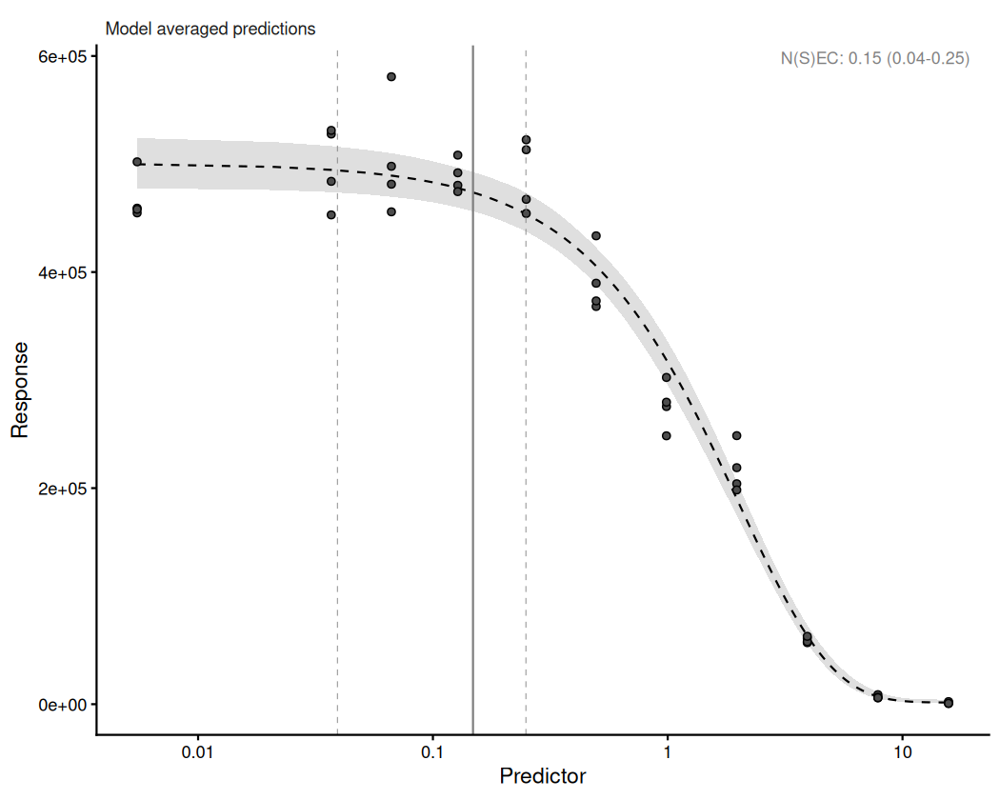
plot of chunk fig-plain
autoplot(fit_ogl, group = "conc_group") + log_x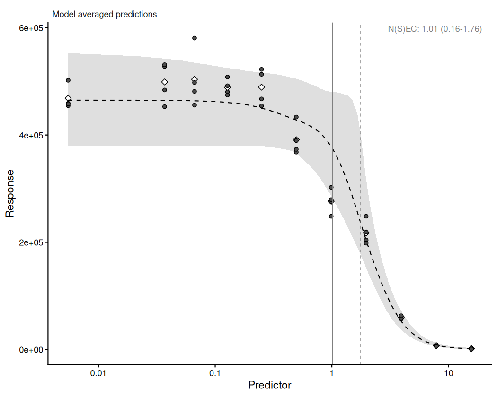
plot of chunk fig-ogl
ogl(conc_group) changes the fitted curve, not only its
uncertainty. Ungrouped, the model-averaged curve falls from the control
immediately; with the term it holds near the control before falling.
EC10 changes with it, from 0.270 mg/L (0.204–0.362) to 0.814
(0.158–1.820) — three times the estimate, on an interval that runs a
factor of 11.5 from end to end against 1.8.
That follows from the weights rather than from any one equation.
Adding ogl(conc_group), which absorbs within-concentration
variation, changes which curve shapes fit the concentration means best,
so the average is taken over a different mixture. The four wells at a
concentration are the only replication the design has, so an analysis
that treats them as independent has nothing left to estimate that
variation with, and reports the narrow band as though it were the
evidence.
A grouping whose levels each span the whole series admits a difference in shape, and the plates of one arm are that case. Each plate is a complete test, and the gain differences shown above mean the plates are not on a common vertical scale.
Admitting a difference in shape is not a reason to fit one. What
separates these plates is a vertical scale factor, and
ogl() states that and nothing more: one deviation on the
fitted value, every curve parameter shared. pgl() would
place a deviation on each parameter instead, so that the threshold and
the slope could differ from plate to plate as well as the level, and it
would estimate four group-level standard deviations where
ogl() estimates one. Seventeen plates would support that —
five levels is the conventional minimum — so the choice is about what
the design says rather than what it can afford. The traces below give no
reason to fit a shape difference, and the same figure is what would show
one if it were there.
fit_pooled <- bnec(rlu_cens | cens(censoring) ~ crf(log(conc), "all") + disp("power"),
data = zn15, family = gfam,
seed = 228, refresh = 0)
fit_plate <- bnec(rlu_cens | cens(censoring) ~ crf(log(conc), "all") + ogl(plate) + disp("power"),
data = zn15, family = gfam,
seed = 228, refresh = 0)Both are screened as above, so that the comparison is between two model averages that sampled rather than between two that merely returned:
fit_pooled <- screen_models(fit_pooled)
#> Dropping 2 of 14 candidate models that failed the sampler screen:
#> - ecxll5: 11 divergent transitions
#> - ecxhormebc4: 44 divergent transitions
#> Fitted models are: nec3param nec4param nechorme nechorme4 ecxexp ecx4param ecxwb1 ecxwb2 ecxwb1p3 ecxwb2p3 ecxll4 ecxll3
fit_plate <- screen_models(fit_plate)
#> Dropping 7 of 14 candidate models that failed the sampler screen:
#> - nec3param: Rhat 1.529, ESS 7.2
#> - nec4param: Rhat 1.53, ESS 7.2
#> - nechorme: Rhat 1.75, ESS 6.1
#> - nechorme4: Rhat 1.53, ESS 7.1
#> - ecxwb2: Rhat 1.53, ESS 7.2
#> - ecxll5: Rhat 1.534, ESS 7.2, 148 divergent transitions
#> - ecxll4: Rhat 1.531, ESS 7.1
#> Fitted models are: ecxexp ecx4param ecxwb1 ecxwb1p3 ecxwb2p3 ecxll3 ecxhormebc4The comparison of interest is between the estimates each gives, and between the model weights each assigns, since pooling curves that differ in scale changes which functional form fits best:
summary(fit_pooled)
#> Object of class bayesmanecfit
#>
#> Family: gamma
#> Links: mu = identity; shape = log
#>
#> Number of posterior draws per model: 8000
#>
#> Model weights (Method: pseudobma_bb_weights):
#> waic wi
#> nec3param 19377.38 0.00
#> nec4param 19381.16 0.00
#> nechorme 19377.38 0.00
#> nechorme4 19381.17 0.00
#> ecxexp 20091.17 0.00
#> ecx4param 19314.85 0.04
#> ecxwb1 19301.93 0.76
#> ecxwb2 19345.83 0.00
#> ecxwb1p3 19378.00 0.00
#> ecxwb2p3 19341.98 0.00
#> ecxll4 19314.77 0.04
#> ecxll3 19311.92 0.17
#>
#>
#> Summary of weighted N(S)EC posterior estimates:
#> NB: Model set contains a combination of ECx and NEC
#> models, and is therefore a model averaged
#> combination of NEC and NSEC estimates.
#> Estimate Q2.5 Q97.5
#> N(S)EC -1.80 -3.27 -0.56
#>
#>
#> Bayesian R2 estimates:
#> Estimate Est.Error Q2.5 Q97.5
#> nec3param 0.60 0.01 0.57 0.62
#> nec4param 0.59 0.01 0.57 0.62
#> nechorme 0.60 0.01 0.57 0.62
#> nechorme4 0.59 0.01 0.57 0.62
#> ecxexp 0.20 0.03 0.13 0.26
#> ecx4param 0.62 0.01 0.60 0.65
#> ecxwb1 0.63 0.01 0.61 0.65
#> ecxwb2 0.61 0.01 0.59 0.64
#> ecxwb1p3 0.64 0.01 0.62 0.66
#> ecxwb2p3 0.61 0.01 0.59 0.64
#> ecxll4 0.62 0.01 0.60 0.65
#> ecxll3 0.63 0.01 0.60 0.65
summary(fit_plate)
#> Object of class bayesmanecfit
#>
#> Family: gamma
#> Links: mu = identity; shape = log
#>
#> Number of posterior draws per model: 8000
#>
#> Model weights (Method: pseudobma_bb_weights):
#> waic wi
#> ecxexp 19884.99 0.00
#> ecx4param 17676.50 0.00
#> ecxwb1 17572.48 1.00
#> ecxwb1p3 17989.70 0.00
#> ecxwb2p3 17845.82 0.00
#> ecxll3 17677.02 0.00
#> ecxhormebc4 17677.52 0.00
#>
#>
#> Summary of weighted NSEC posterior estimates:
#> Estimate Q2.5 Q97.5
#> NSEC -0.36 -1.94 0.15
#>
#>
#> Bayesian R2 estimates:
#> Estimate Est.Error Q2.5 Q97.5
#> ecxexp 0.53 0.03 0.46 0.59
#> ecx4param 0.98 0.00 0.98 0.98
#> ecxwb1 0.98 0.00 0.98 0.99
#> ecxwb1p3 0.98 0.00 0.98 0.98
#> ecxwb2p3 0.98 0.00 0.98 0.98
#> ecxll3 0.98 0.00 0.98 0.99
#> ecxhormebc4 0.98 0.00 0.98 0.99
rbind(
data.frame(fit = "pooled", t(ecx(fit_pooled, ecx_val = 10, xform = exp))),
data.frame(fit = "ogl(plate)", t(ecx(fit_plate, ecx_val = 10, xform = exp)))
)
#> fit Q50 Q2.5 Q97.5
#> 1 pooled 0.280055 0.2074506 0.7368929
#> 2 ogl(plate) 0.325643 0.3018052 0.3509309Both fits draw one population curve through the same observations.
What differs is where the spread between plates goes: into the residual
for fit_pooled, and into the group-level term for
fit_plate.
autoplot(fit_pooled) + log_x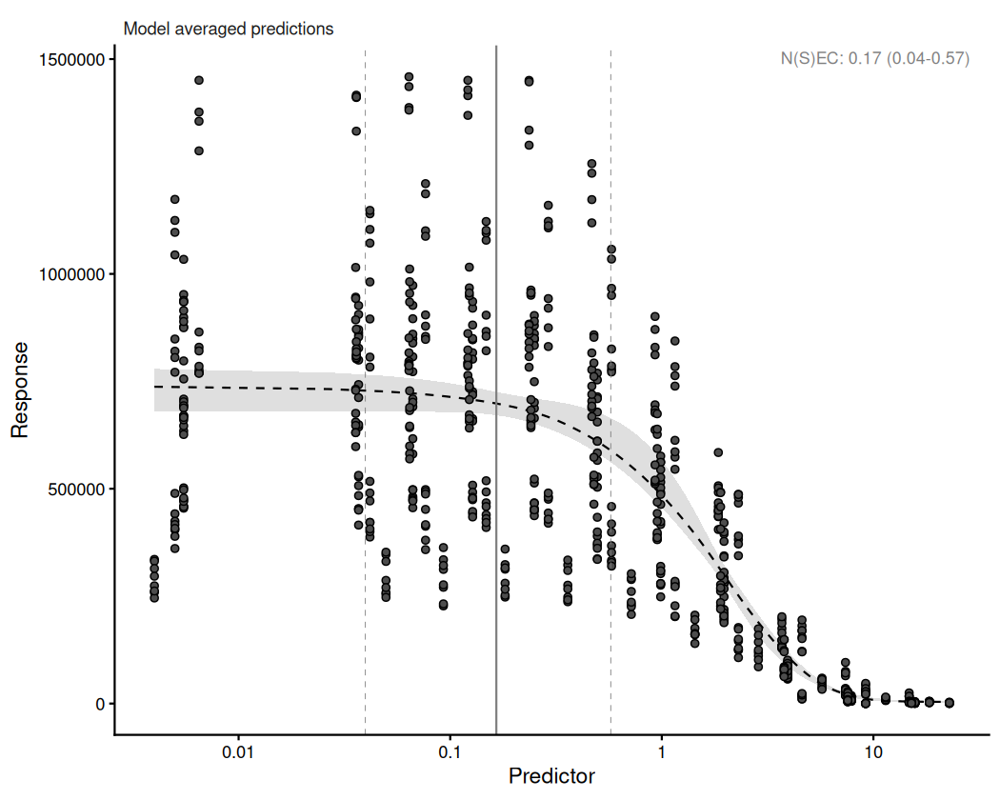
plot of chunk fig-pooled
autoplot(fit_plate, group = "plate") + log_x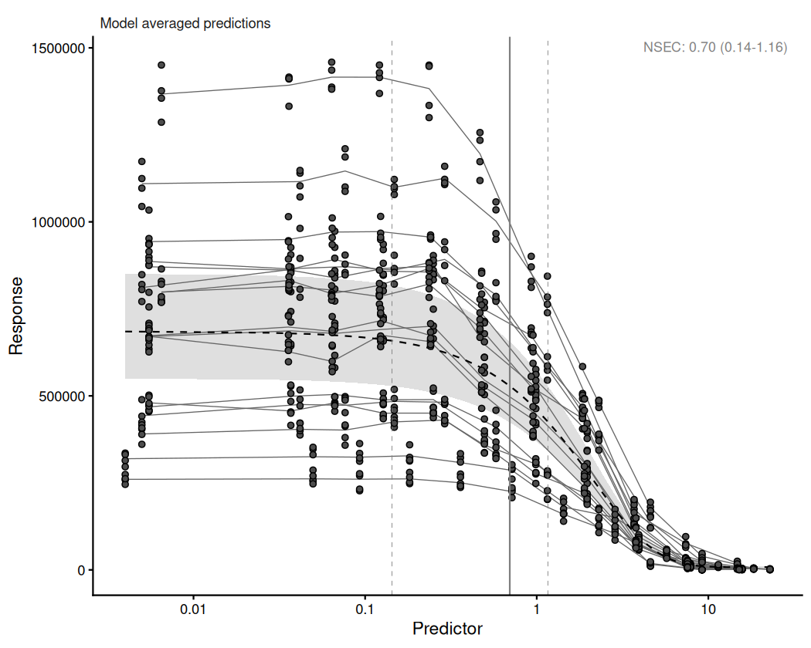
plot of chunk fig-plate
group = "plate" joins each plate’s observations in the
second figure, which is what makes the structure legible: seventeen
roughly parallel traces, flat over the lower half of the series and
falling together. The spread between them at any one concentration is
larger than the fall between one concentration and the next over that
flat part, and the traces stay in much the same order throughout, which
is what a per-plate multiplicative constant looks like. Control wells
run from about 250,000 to 1,450,000 relative light units across the
seventeen plates, against the 250,000 floor the assay was designed to
clear.
The pooled fit has nowhere to put that except the residual, so its
curve falls from the control on a narrow band; with
ogl(plate) the spread is attributed to the plates and the
population curve holds nearer the control before falling.
EC10 is 0.280 mg/L pooled against 0.326 with the plate term, a difference of about a sixth, and its interval closes from 0.207–0.737 to 0.302–0.351 — from a factor of 3.6 between the bounds to a factor of 1.2. The N(S)EC changes by more: 0.165 mg/L (0.038–0.571) pooled against 0.698 (0.144–1.162). A reader who took the pooled fit at face value would report a no-effect concentration a quarter of the one the plate term gives, with an EC10 interval three times wider than the data support.
The weights account for it. With the plate term ecxwb1
takes all of the weight; pooled it takes 0.76, with 0.17 on
ecxll3 and 0.04 each on ecx4param and
ecxll4. Pooling curves that differ in scale leaves the
candidate set less certain of which shape it is looking at, and the
threshold estimate is what that uncertainty lands on.
nec3param, nec4param, nechorme
and nechorme4 — every equation that estimates a threshold —
take no weight in either fit. A term on the fitted value rescales each
plate’s curve by a constant and leaves the shape of the transition
alone, so it does not make a threshold easier to place, and pooling
curves of different scale smears the transition rather than sharpening
it.
The direction here is the opposite of the within-concentration
result, and both follow from what the grouping has to explain. A
concentration group sits at one concentration, so
ogl(conc_group) adds a variance component that the mean
function cannot absorb, and the intervals widen. A plate spans the whole
series, so ogl(plate) removes a between-plate difference
that was otherwise left in the residual, and the curve is better
determined.
A bnec_group() fit holds one model-averaged fit per
level, and plot() on it draws each in turn through base
graphics. ggbnec_data() returns the same model-averaged
curve as a data frame, so stacking those frames gives one object that a
single ggplot() call can facet. Both figures below use
it.
group_curves <- function(x) {
do.call(rbind, Map(function(f, lev) data.frame(level = lev, ggbnec_data(f)),
x$fits, x$levels))
}Copper and zinc are two contaminants of interest, not a sample from a
population of metals, so they are levels rather than a grouping. Each is
fitted with the structure the sections above arrived at: the censored
response, a plate term for the gain, and a dispersion sub-model.
bnec_group() fits each level separately and returns one
object. The call keeps model = "all" for the reason given
under Within-concentration grouping, that luminescence rises
above the control level at low zinc concentrations.
zn_cu_15 <- droplevels(subset(lum31, minutes == 15))
fits_tox <- bnec_group(
rlu_cens | cens(censoring) ~ crf(log(conc), "all") + ogl(plate) + disp("power"),
data = zn_cu_15, group_var = "toxicant", family = gfam,
seed = 228, refresh = 0)
summary(fits_tox)
#> $Cu
#> Object of class bayesmanecfit
#>
#> Family: gamma
#> Links: mu = identity; shape = log
#>
#> Number of posterior draws per model: 8000
#>
#> Model weights (Method: pseudobma_bb_weights):
#> waic wi
#> nec3param 14270.05 0.00
#> nec4param 14003.98 0.00
#> nechorme 14269.86 0.00
#> nechorme4 14670.57 0.00
#> ecxexp 15049.23 0.00
#> ecx4param 13925.43 0.34
#> ecxwb1 13953.02 0.06
#> ecxwb2 13960.35 0.00
#> ecxwb1p3 14917.03 0.00
#> ecxwb2p3 14287.94 0.00
#> ecxll5 13926.95 0.29
#> ecxll4 13925.55 0.31
#> ecxll3 14323.43 0.00
#> ecxhormebc4 14323.20 0.00
#>
#>
#> Summary of weighted N(S)EC posterior estimates:
#> NB: Model set contains a combination of ECx and NEC
#> models, and is therefore a model averaged
#> combination of NEC and NSEC estimates.
#> Estimate Q2.5 Q97.5
#> N(S)EC -2.59 -3.14 -2.40
#>
#>
#> Bayesian R2 estimates:
#> Estimate Est.Error Q2.5 Q97.5
#> nec3param 0.96 0.00 0.95 0.96
#> nec4param 0.96 0.00 0.96 0.97
#> nechorme 0.96 0.00 0.95 0.96
#> nechorme4 0.75 0.38 0.08 0.97
#> ecxexp 0.55 0.03 0.49 0.60
#> ecx4param 0.97 0.00 0.97 0.97
#> ecxwb1 0.97 0.00 0.97 0.98
#> ecxwb2 0.97 0.00 0.97 0.97
#> ecxwb1p3 0.82 0.01 0.80 0.84
#> ecxwb2p3 0.96 0.00 0.95 0.97
#> ecxll5 0.97 0.00 0.97 0.98
#> ecxll4 0.97 0.00 0.97 0.97
#> ecxll3 0.96 0.00 0.95 0.97
#> ecxhormebc4 0.96 0.00 0.95 0.97
#>
#> $Zn
#> Object of class bayesmanecfit
#>
#> Family: gamma
#> Links: mu = identity; shape = log
#>
#> Number of posterior draws per model: 8000
#>
#> Model weights (Method: pseudobma_bb_weights):
#> waic wi
#> nec3param 18187.58 0.00
#> nec4param 18191.58 0.00
#> nechorme 18237.85 0.00
#> nechorme4 18191.58 0.00
#> ecxexp 19884.99 0.00
#> ecx4param 17676.50 0.00
#> ecxwb1 17572.48 1.00
#> ecxwb2 18629.37 0.00
#> ecxwb1p3 17989.70 0.00
#> ecxwb2p3 17845.82 0.00
#> ecxll5 18688.73 0.00
#> ecxll4 18628.74 0.00
#> ecxll3 17677.02 0.00
#> ecxhormebc4 17677.52 0.00
#>
#>
#> Summary of weighted N(S)EC posterior estimates:
#> NB: Model set contains a combination of ECx and NEC
#> models, and is therefore a model averaged
#> combination of NEC and NSEC estimates.
#> Estimate Q2.5 Q97.5
#> N(S)EC -0.36 -1.94 0.15
#>
#>
#> Bayesian R2 estimates:
#> Estimate Est.Error Q2.5 Q97.5
#> nec3param 0.97 0.00 0.97 0.97
#> nec4param 0.97 0.00 0.97 0.97
#> nechorme 0.97 0.00 0.97 0.97
#> nechorme4 0.97 0.00 0.97 0.97
#> ecxexp 0.53 0.03 0.46 0.59
#> ecx4param 0.98 0.00 0.98 0.98
#> ecxwb1 0.98 0.00 0.98 0.99
#> ecxwb2 0.89 0.16 0.61 0.98
#> ecxwb1p3 0.98 0.00 0.98 0.98
#> ecxwb2p3 0.98 0.00 0.98 0.98
#> ecxll5 0.75 0.40 0.05 0.99
#> ecxll4 0.89 0.16 0.61 0.98
#> ecxll3 0.98 0.00 0.98 0.99
#> ecxhormebc4 0.98 0.00 0.98 0.99Back-transformed, the threshold is 0.075 mg/L for copper (0.043–0.091) and 0.698 for zinc (0.144–1.162): copper is the more potent by roughly an order of magnitude, which is the ordering Luter et al. (2025) report from the per-plate analysis and at much the same separation.
ggplot(group_curves(fits_tox), aes(x = x_e, colour = level, fill = level)) +
geom_polygon(aes(y = y_ci), colour = NA, alpha = 0.3) +
geom_line(aes(y = y_e), linetype = 2) +
geom_point(aes(x = x_r, y = y_r), alpha = 0.4, size = 1.2) +
geom_vline(aes(xintercept = nec_vals), colour = "grey50") +
facet_wrap(~level, ncol = 1, scales = "free") +
log_x +
scale_colour_hue(guide = "none") +
scale_fill_hue(guide = "none") +
theme_classic() +
labs(x = "Dissolved metal (mg/L)", y = "Relative light units")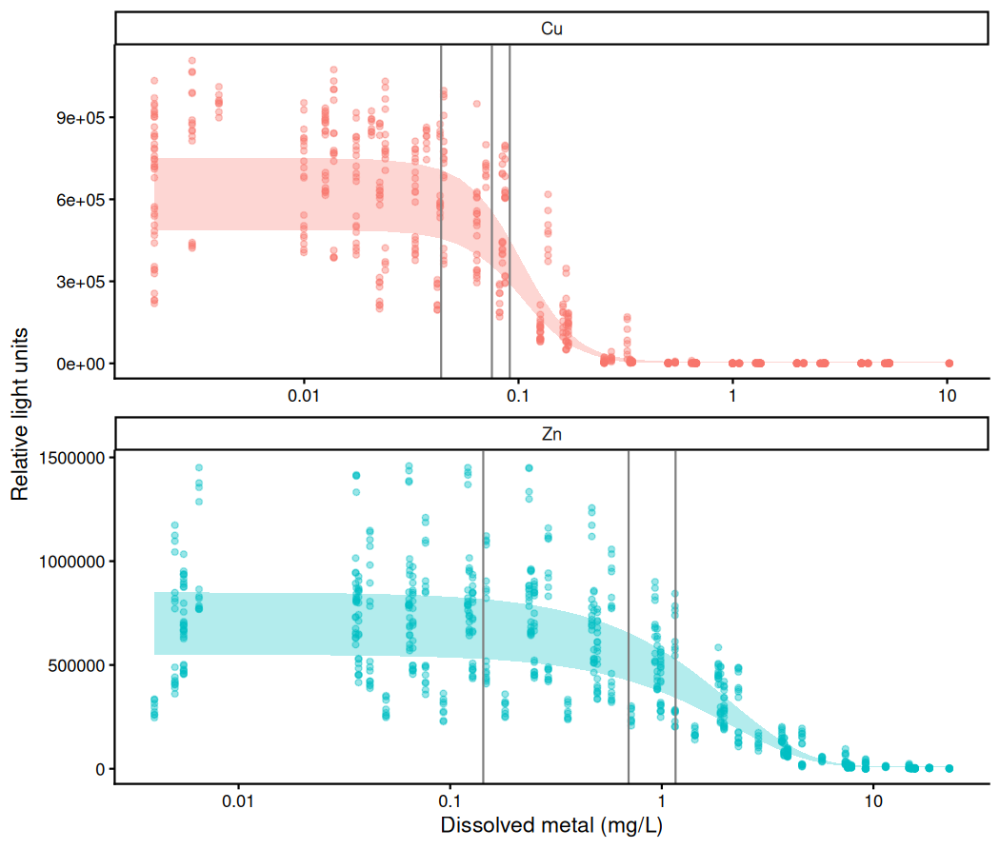
plot of chunk fig-metals
Each panel holds its own response axis, because the two arms were read at different gains and their relative light units are not comparable between them. What is comparable is where each falls, and the two panels put that an order of magnitude apart: copper’s threshold rules sit between 0.04 and 0.09 mg/L and zinc’s between 0.14 and 1.2. In both the observations scatter widely at every concentration while the fitted band stays narrow, which is the plate term holding the between-plate spread out of the population curve.
cmp_tox <- compare_posterior(fits_tox, comparison = "nec")
cmp_tox$prob_diff
#> comparison prob
#> 1 Cu-Zn 0.01525prob_diff reduces each pair to one number. The
posteriors it was computed from are returned as well, in
posterior_data, and drawing them separates a difference in
location from a difference in width:
tox_post <- cmp_tox$posterior_data
tox_post$value <- exp(tox_post$value)
ggplot(data = tox_post, mapping = aes(x = value)) +
geom_density(mapping = aes(group = model, colour = model, fill = model),
alpha = 0.3) +
log_x +
theme_classic() +
labs(x = "Dissolved metal (mg/L)", y = "Density",
fill = "Toxicant", colour = "Toxicant")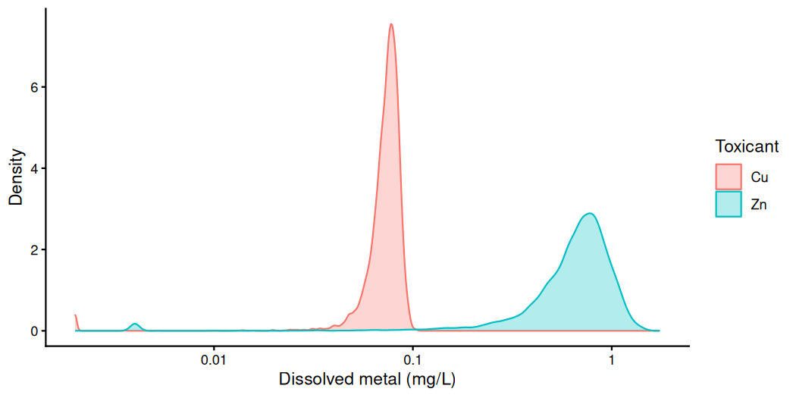
plot of chunk fig-cmp-metals
The two posteriors barely overlap, and they differ in more than their centres. Copper’s median is 0.075 mg/L over an interval of 0.043 to 0.091, a factor of 2.1 from end to end. Zinc’s is 0.698 over 0.144 to 1.162, a factor of 8.1. Copper is both the more potent metal and the better determined one on these data, and the single pairwise comparison of 0.0153 is what that separation reduces to.
Combined effects of climate change and the herbicide diuron on the coral Acropora millepora
A concentration-response design has to be wide enough for the curve being asked of it. Five concentrations is the conventional minimum, and at that minimum the number of parameters in an equation matters: the design has enough information to place a threshold or a midpoint but not enough to place both asymptotes as well. Nothing refuses: every equation is offered, each returns an object, and the divergent transitions are the only sign that the design was too narrow for it.
coral_colour and coral_pam are two
endpoints of one exposure of Acropora millepora to the
herbicide diuron under three climate scenarios (Flores et al. 2021), reported at https://doi.org/10.1016/j.marpolbul.2021.112582.
The scenarios are not years but combinations of temperature and dissolved carbon dioxide, labelled by the year they represent: 28.1 °C at 397 ppm for present-day conditions, and RCP8.5 projections of 29.1 °C at 680 ppm and 30.2 °C at 858 ppm. Three replicate chambers were run at each combination of scenario and concentration, with four coral fragments in each. The concentrations are relevant to where the corals live: diuron has been measured in the Great Barrier Reef lagoon at up to 0.778 µg/L.
The two endpoints are different measurements on the same fragments.
yield is the effective quantum yield of photosystem II in
the symbiotic dinoflagellates, read by pulse-amplitude modulated
fluorometry. proportion is a colour index standing in for
bleaching: a photograph of about half a square centimetre of live
tissue, reduced to its mean grey pixel value and then rescaled between
the smallest and largest values observed. That rescaling has a
consequence for the family: one observation is bound to sit on 1, and
one does.
Both are within-concentration designs, a chamber sitting at one concentration, and they differ in the width of the design and in nothing else that matters here.
data(coral_colour)
data(coral_pam)
rbind(
colour = c(rows = nrow(coral_colour), concentrations = n_distinct(coral_colour$diuron),
chambers = n_distinct(coral_colour$chamber)),
pam = c(rows = nrow(coral_pam), concentrations = n_distinct(coral_pam$diuron),
chambers = n_distinct(coral_pam$chamber))
)
#> rows concentrations chambers
#> colour 180 5 45
#> pam 414 6 54The two differ in width rather than in kind: 180 colour readings over five concentrations in 45 chambers, against 414 yield readings over six in 54. The colour endpoint is the narrower design and the one this section turns on.
Both endpoints include an untreated control recorded as an exact
zero. A log axis has no position for it, and
crf(log(diuron)) has no value for it either: the column
reaches the data check as -Inf and bnec()
refuses the fit, naming it. Some value has to be put in its place. That
substitution is made here, in the vignette, and not in the shipped data,
so that data-raw/coral_diuron.R continues to record what
the experiment measured.
coral_pam was dosed at 0.29, 0.96, 2.9, 9.6 and 29 µg/L,
each step about 3.16 times the last, which is half an order of
magnitude. One further step below the lowest treatment is 0.29/3.16 =
0.092 µg/L, and 0.1 is that value rounded. It puts the control the same
distance from 0.29 that 0.29 is from 0.96. Half the lowest treatment,
0.145, would put it a third of that distance away, closer to the lowest
dose than any two doses are to each other. coral_colour was
dosed at the same concentrations but for 9.6, so its series has one step
missing in the middle and the substituted control sits a regular step
below it.
nudge <- function(x) ifelse(x == 0, 0.1, x)
coral_colour$diuron_adj <- nudge(coral_colour$diuron)
coral_pam$diuron_adj <- nudge(coral_pam$diuron)
sort(unique(coral_pam$diuron_adj))
#> [1] 0.10 0.29 0.96 2.90 9.60 29.00No other concentration is altered. Every estimate reported in this section is therefore an estimate against a control placed at 0.1 µg/L, and a threshold returned near that value would be describing the substitution rather than diuron.
The substitution has a second consequence, and it is general rather
than particular to these data. Any concentration below 1 has a negative
logarithm, so log(diuron_adj) runs from -2.30 to 3.37.
Three of the 18 equations that model = "all" offers for
this family cannot be fitted on a predictor that reaches a negative
value. necsigm and ecxsigm raise the predictor
to a fractional power, which is undefined there.
ecxhormebc5 cannot be reliably initialised where an
identity-linked Beta mean must stay positive, because its
hormesis term is negative wherever the predictor is. bnec()
reports each exclusion and fits the remaining 15. Every
lum31 fit in this vignette meets the same condition, its
concentrations being in mg/L and mostly below 1.
rbind(
transform(coral_colour[c("climate", "diuron_adj")],
endpoint = "colour (proportion)", y = coral_colour$proportion),
transform(coral_pam[c("climate", "diuron_adj")],
endpoint = "yield", y = coral_pam$yield)
) |>
ggplot(aes(x = diuron_adj, y = y, colour = climate, shape = climate)) +
geom_point(alpha = 0.7) +
facet_wrap(~endpoint, scales = "free_y") +
log_x +
theme_classic() +
theme(legend.position = "bottom") +
labs(x = "Diuron (ug/L), control at 0.1", y = "Response")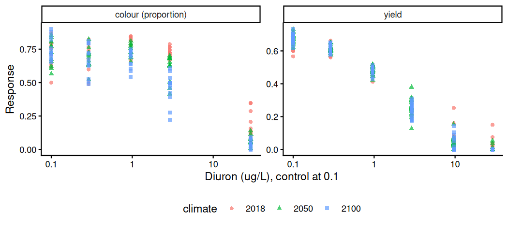
plot of chunk fig-coral-raw
Both responses decline with concentration. The yield panel has observations at every one of its six concentrations. The colour panel has none between 2.9 and 29 µg/L, a full order of magnitude and the widest unsampled interval in either endpoint.
The colour panel’s top concentration is worth reading carefully, because it is the only observation below the gap and so is the only thing that can place a lower asymptote. At 29 µg/L the underlying photographs average 211 of 255 on the grey scale at day 14, against 90 to 128 at every lower concentration. The day-0 values run from 91 to 103 throughout, so those fragments started like the others and ended white. Flores et al. (2021) record that all corals at 29 µg/L had died by day 10. The point is real and the published fit uses it, but what it measures is a fragment that has bleached completely rather than one on a declining curve.
The scenarios separate in the colour endpoint and barely at all in yield. Mean colour at 2.9 µg/L runs 0.728, 0.611 and 0.456 from 2018 to 2100, and at 29 µg/L 0.173, 0.066 and 0.045. Mean yield differs by less than 0.015 between scenarios at every concentration below 9.6.
Flores et al. (2021) reach the same conclusion from their own fits. Their colour index EC50 falls from 6.05 µg/L under present-day conditions to 4.99 and 4.86, and they put the probability that each later scenario lies below the first at 0.956 and 0.970. Their yield EC50 is 2.06, 2.02 and 2.03, and the matching probabilities are 0.615 and 0.539, neither far from the 0.5 that would mean no separation at all.
Climate is a fixed set of three levels of interest in themselves, so
the route for it is bnec_group(), the route the factor
covariates take. The fits below pool over it, which the yield result
above licenses and the colour result does not. That is a deliberate
simplification: what these fits are used to show is how the number of
curve parameters behaves against a design of a given width, and one
curve per endpoint shows it most directly.
The yield endpoint has six concentrations and 54 chambers of five to
eight readings, and ogl(chamber) on it is well
conditioned:
fit_pam <- bnec(yield ~ crf(log(diuron_adj), "all") + ogl(chamber),
data = coral_pam, family = Beta(link = "identity"),
seed = 228, refresh = 0)
fit_pam <- screen_models(fit_pam)
#> Dropping 4 of 15 candidate models that failed the sampler screen:
#> - nec3param: Rhat 1.014, ESS 177.2
#> - nechorme4: 29 divergent transitions
#> - ecxexp: 25 divergent transitions
#> - ecxll5: 84 divergent transitions
#> Fitted models are: nec4param nechorme nechormepwr01 ecx4param ecxwb1 ecxwb2 ecxwb1p3 ecxwb2p3 ecxll4 ecxll3 ecxhormebc4
summary(fit_pam)
#> Object of class bayesmanecfit
#>
#> Family: beta
#> Links: mu = identity
#>
#> Number of posterior draws per model: 8000
#>
#> Model weights (Method: pseudobma_bb_weights):
#> waic wi
#> nec4param -1668.50 0.04
#> nechorme -1665.74 0.01
#> nechormepwr01 -1665.56 0.01
#> ecx4param -1664.11 0.02
#> ecxwb1 -1658.17 0.24
#> ecxwb2 -1668.13 0.05
#> ecxwb1p3 -1659.14 0.00
#> ecxwb2p3 -1660.36 0.00
#> ecxll4 -1663.47 0.01
#> ecxll3 -1653.11 0.00
#> ecxhormebc4 -1677.66 0.63
#>
#>
#> Summary of weighted N(S)EC posterior estimates:
#> NB: Model set contains a combination of ECx and NEC
#> models, and is therefore a model averaged
#> combination of NEC and NSEC estimates.
#> Estimate Q2.5 Q97.5
#> N(S)EC -1.50 -2.06 0.71
#>
#>
#> Bayesian R2 estimates:
#> Estimate Est.Error Q2.5 Q97.5
#> nec4param 0.98 0.00 0.98 0.98
#> nechorme 0.98 0.00 0.98 0.99
#> nechormepwr01 0.98 0.00 0.98 0.99
#> ecx4param 0.98 0.00 0.98 0.98
#> ecxwb1 0.98 0.00 0.98 0.98
#> ecxwb2 0.98 0.00 0.98 0.98
#> ecxwb1p3 0.98 0.00 0.98 0.98
#> ecxwb2p3 0.98 0.00 0.98 0.98
#> ecxll4 0.98 0.00 0.98 0.98
#> ecxll3 0.98 0.00 0.98 0.98
#> ecxhormebc4 0.98 0.00 0.98 0.99As in the sections above, the N(S)EC in that summary is on the scale
the model was fitted on, log(diuron_adj).
xform = exp returns it and the effect concentrations to
µg/L:
# Bound rather than called twice: the model-averaged N(S)EC is also the
# reference the figure below draws its lines from, and a second call would be a
# second draw from the mixture.
pam_ne <- nsec(fit_pam, xform = exp)
rbind(
data.frame(estimate = "NSEC", t(pam_ne)),
data.frame(estimate = "EC10", t(ecx(fit_pam, ecx_val = 10, xform = exp))),
data.frame(estimate = "EC50", t(ecx(fit_pam, ecx_val = 50, xform = exp)))
)
#> estimate Q50 Q2.5 Q97.5
#> 1 NSEC 0.2197578 0.1226876 2.069799
#> 2 EC10 0.4785594 0.4007950 2.119488
#> 3 EC50 2.0003351 1.8009836 2.750745The three estimates are ordered as they should be — 0.220, 0.479 and 2.000 µg/L — and their upper bounds are not. The N(S)EC reaches 2.070 and the EC10 2.119, both above the EC50 median, while the EC50 interval is the narrowest of the three at 1.801 to 2.751.
A model-averaged estimate is a mixture, and the median and the tail
of a mixture can be set by different components. Two equations hold 0.87
of the weight here and both place the threshold low:
ecxhormebc4 at 0.229 (0.125–0.295) and ecxwb1
at 0.178 (0.114–0.230). Neither has an upper bound above 0.3, and the
averaged median of 0.220 is theirs. The averaged upper bound is not.
nec4param places a threshold at 2.106 (1.821–2.357) on a
weight of 0.04, and ecxwb2 at 1.620 on 0.05. Those two hold
about a tenth of the weight between them and sit an order of magnitude
above the other nine, which is enough to put the 97.5th percentile of
the mixture at 2.070. The screen removed a third equation of the same
kind, nec3param at 1.654, and the tail is still there: it
is not one equation’s doing.
Each equation’s own threshold, against the weight it holds, is below.
The estimator follows the equation: nec() where the
equation has a nec parameter, nsec() where it
does not.
pam_wi <- summary(fit_pam)$mod_weights[, "wi"]
pam_thr <- do.call(rbind, lapply(names(pam_wi), function(m) {
one <- pull_out(fit_pam, model = m)
v <- if (m %in% models()$nec) nec(one, xform = exp) else nsec(one, xform = exp)
data.frame(equation = m, wi = pam_wi[[m]], est = v[[1]], lo = v[[2]], hi = v[[3]])
}))
pam_thr$equation <- reorder(factor(pam_thr$equation), pam_thr$est)
ggplot(pam_thr, aes(x = est, y = equation)) +
annotate("rect", xmin = pam_ne[[2]], xmax = pam_ne[[3]],
ymin = -Inf, ymax = Inf, fill = "#2c6a5a", alpha = 0.07) +
geom_vline(xintercept = pam_ne[[1]], colour = "#2c6a5a") +
geom_vline(xintercept = pam_ne[[3]], colour = "#2c6a5a", linetype = 2) +
geom_linerange(aes(xmin = lo, xmax = hi, colour = wi)) +
geom_point(aes(colour = wi, size = wi)) +
scale_colour_gradient(low = "grey80", high = "#2c6a5a",
name = "stacking\nweight") +
scale_size_area(max_size = 5, guide = "none") +
log_x +
theme_classic() +
labs(x = "Threshold (µg/L)", y = NULL)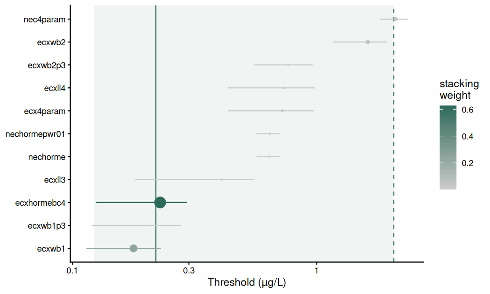
plot of chunk fig-pam-thresholds
The solid line is the model-averaged median and the dashed line its
upper bound, with the averaged interval shaded. The ordering is what the
paragraph above states in numbers: the two darkest points sit at the
left of the range, the two furthest to the right sit an order of
magnitude away and are pale, with nec4param on the dashed
line itself, and between them the weight is unrelated to the position.
An equation’s threshold and the weight it holds are separate quantities,
and that is what lets a twentieth of the weight decide where the
averaged interval ends.
The same draws are visible in the figure below. The credible band steps down at about 2 µg/L, its upper edge falling from about 0.58 to about 0.30, because the equations that place a threshold there hold the curve near the control until it and drop afterwards. A tenth of the weight has no effect on the median and still decides where the interval ends, which is a reason to read a model-averaged interval against the weights rather than on its own.
autoplot(fit_pam, group = "climate", group_aes = "colour") + log_x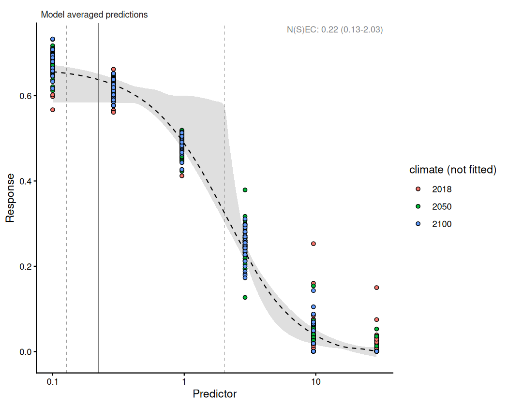
plot of chunk fig-pam
climate is not in the fitted formula — the model
estimates a deviation per chamber, not per scenario — so
autoplot() takes it from the columns bnec()
retained from the supplied data and labels the legend “climate (not
fitted)”. The curve and the band are pooled over the three scenarios,
and the colour marks the observations only.
The scenarios overlap over most of the series. The scenario means of
yield differ by at most 0.014 at 0.1, 0.29, 0.96 and 2.9
µg/L, and separate only at 9.6 and 29 µg/L, where they are 0.052, 0.040,
0.022 and 0.027, 0.006, 0.000 — a separation between quantities that
have already fallen to a twelfth of the control. Flores et al. (2021) report the same result from
these data, giving a probability of 0.615 and 0.539 that yield differs
between the warming scenarios.
The colour endpoint has five concentrations and 45 chambers of four fragments. Fitting equations of three and of four curve parameters to it separately shows where the design runs out:
three_par <- bnec(proportion ~ crf(log(diuron_adj), c("ecxll3", "ecxwb1p3")) + ogl(chamber),
data = coral_colour, family = Beta(link = "identity"),
seed = 228, refresh = 0)
four_par <- bnec(proportion ~ crf(log(diuron_adj), c("nec4param", "ecx4param")) + ogl(chamber),
data = coral_colour, family = Beta(link = "identity"),
seed = 228, refresh = 0)
sampled_badly <- function(fit, label) {
worst <- vapply(rhat(fit), function(x) max(x$rhat_vals), numeric(1))
divergent <- vapply(names(worst), function(m) {
np <- brms::nuts_params(pull_out(fit, model = m)$fit)
sum(np$Value[np$Parameter == "divergent__"])
}, numeric(1))
data.frame(curve = label, equation = names(worst),
divergent = divergent, max_rhat = round(worst, 4),
row.names = NULL)
}
rbind(sampled_badly(three_par, "three parameters"),
sampled_badly(four_par, "four parameters"))
#> curve equation divergent max_rhat
#> 1 three parameters ecxll3 0 1.0021
#> 2 three parameters ecxwb1p3 0 1.0042
#> 3 four parameters nec4param 1914 1.0859
#> 4 four parameters ecx4param 2076 1.2926Neither three-parameter equation records a divergent transition, and
both have an R-hat of 1.004 or below. nec4param records
1914 of its 8000 retained draws and ecx4param 2076, at
R-hats of 1.086 and 1.293. About a quarter of the transitions of each
four-parameter equation diverged.
A divergent transition is recorded where the sampler’s step size is too large for the curvature of the posterior at that point, so the simulated path departs from the one the equations describe. A parameter the data do not constrain produces exactly that curvature, in a posterior nearly flat along one direction and sharp across it. R-hat asks a different question — whether the chains of one fit arrived at the same distribution — and here it fails as well.
Length of run matters to which of the two checks notices. Fitting the
same four equations at 5000 iterations with 4000 warmup, half what
bnec() uses, gave 212 divergent transitions for
nec4param and 326 for ecx4param of 4000 draws
each. At that length ecx4param returned an R-hat of 1.009,
inside every conventional cutoff and within 0.005 of the two
three-parameter equations. At the default run its R-hat is 1.293. The
shorter chain did not make the fit better; it made one of the two
diagnostics stop reporting the problem, which is a reason to report a
diagnostic against the settings that produced it.
autoplot(three_par, group = "climate", group_aes = "colour") + log_x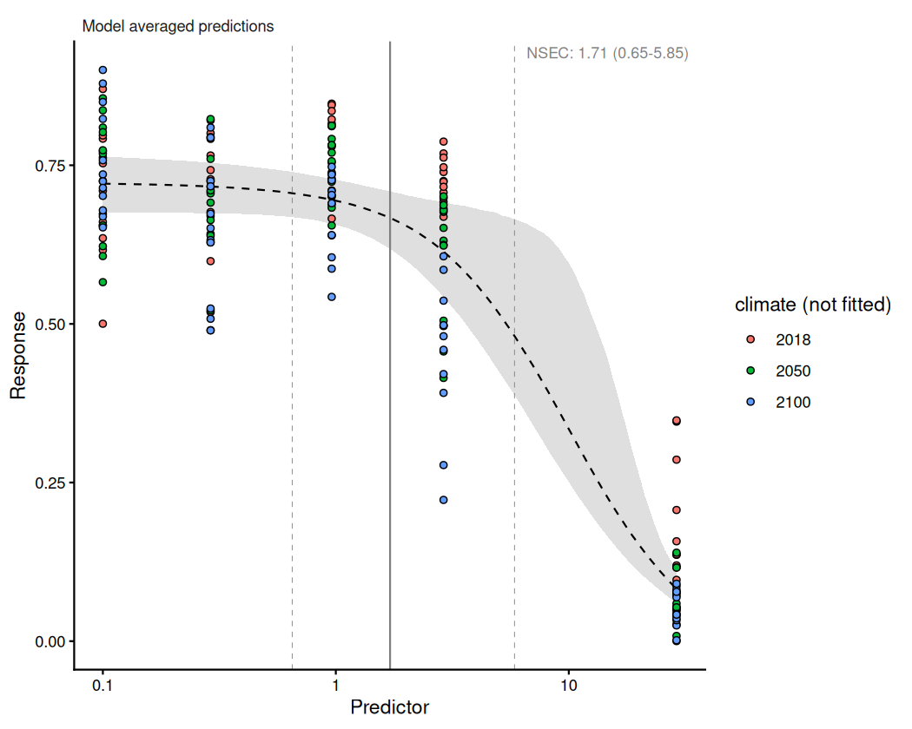
plot of chunk fig-three-par
autoplot(four_par, group = "climate", group_aes = "colour") + log_x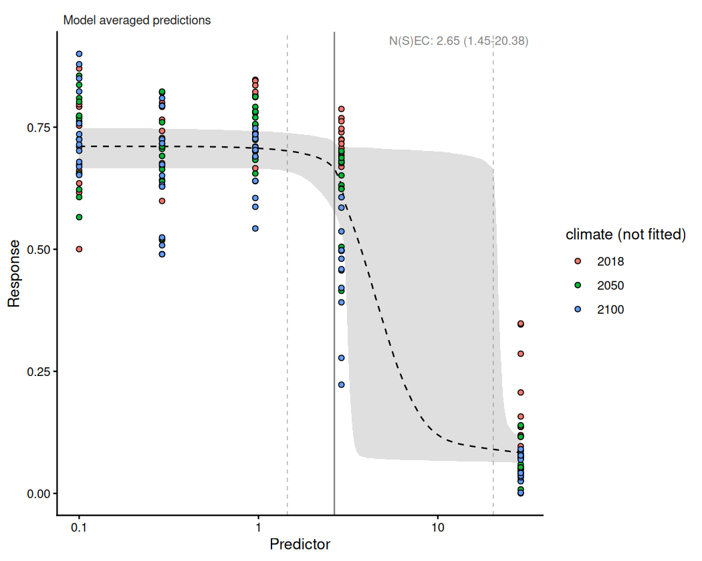
plot of chunk fig-four-par
The figures show where those divergences come from. Nothing between 2.9 and 29 µg/L tells a four-parameter equation where its lower asymptote sits, because the colour design has no observation across that tenfold range. At 10 µg/L the four-parameter credible band is 0.63 wide on a response that runs from 0 to about 0.9, so it covers most of the values the endpoint can take; the three-parameter band is 0.35 there. Both close to 0.05 at 29 µg/L, where the observations resume. A three-parameter equation fixes the lower asymptote instead of estimating it, and so has nothing to place in the gap.
The four-parameter equations are worse served than the gap alone suggests. What they have to estimate a lower asymptote from is one concentration, and the reading at that concentration is of fragments that had bleached completely.
The climate scenarios separate in these two figures where they did
not in fit_pam. The scenario means of
proportion are 0.779, 0.737 and 0.672 at 0.96 µg/L and
0.728, 0.611 and 0.456 at 2.9, a spread of 0.27 on a response running to
about 0.9, and the 2100 points sit below the 2018 points at every
concentration above the control. Flores et al.
(2021) report a probability of 0.956 and 0.970 that the colour
index differs between the warming scenarios, against 0.615 and 0.539 for
yield. Neither figure fits that difference: both curves are pooled over
the scenarios, and separating them would need climate in
the formula or a bnec_group() call over it.
The threshold estimates differ in the same way. The three-parameter set returns an NSEC of 1.71 µg/L (0.65–5.84). The four-parameter set returns 2.69 (1.42–20.37), an upper bound of the same order as the highest concentration tested, which is 29. Both sets were fitted to the same 180 observations.
#301 proposes restricting a model set by the number of curve parameters for this reason.
The colour score has exactly one observation on the Beta
boundary, which follows from the rescaling described above, and the
yield endpoint has 63 readings at zero. Neither is a defect in the data;
both are decisions about the response that have to be made before the
family is chosen, and vignette("example6") covers them.
Phytotoxicity of photosystem II herbicides to coral
herbicide (Jones and Kerswell
2003) holds the effective quantum yield of photosystem II in the
symbiotic dinoflagellates of the coral Seriatopora hystrix,
measured after a ten-hour exposure to each of seven photosystem II
inhibiting herbicides. Three replicate containers of four corals were
held at each concentration. The report is at https://doi.org/10.3354/meps261149.
The endpoint is the same quantity as coral_pam’s
yield, and the two studies are connected by more than that.
Jones and Kerswell (2003) found the effect
of diuron to be inversely related to temperature, which is the
observation Flores et al. (2021) tested
two decades later by crossing diuron with warming.
data(herbicide)
ggplot(herbicide, aes(x = concentration, y = fvfm, colour = herbicide)) +
geom_point(alpha = 0.6) +
facet_wrap(~herbicide, ncol = 2, scales = "free_x") +
log_x +
scale_colour_hue(guide = "none") +
theme_classic() +
theme(panel.spacing.x = unit(1.2, "lines")) +
labs(x = "Concentration (ug/L)", y = "Effective quantum yield")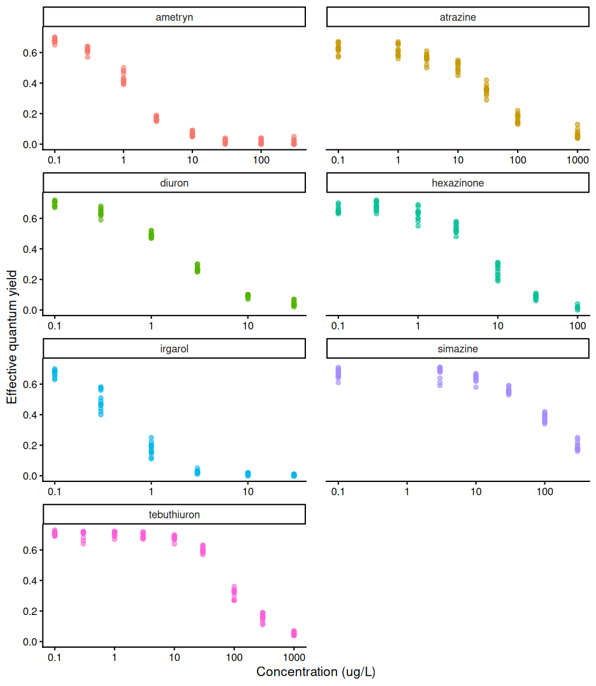
plot of chunk fig-herbicide-raw
Effective quantum yield declines with concentration in all seven, and the concentration at which it does so differs by two orders of magnitude between them. Yield is at half its lowest-dose mean by 1 µg/L of irgarol and 3 µg/L of diuron or ametryn, against 100 µg/L of tebuthiuron and 300 of simazine, which is the highest concentration simazine was tested at.
Seven herbicides are a fixed set chosen for their interest, not a
sample from a population of herbicides, so shrinking them towards a
common curve answers a different question from the one being asked, and
their functional forms may differ. bnec_group() fits each
level separately and returns one object. This call uses
decline rather than "all", which is what
Figure 11 of Fisher et al. (2024) was
fitted with.
fits_herb <- bnec_group(fvfm ~ crf(log(concentration), "decline"),
data = herbicide, group_var = "herbicide",
family = Beta(link = "identity"),
seed = 228, refresh = 0)summary() on a bayesnecgroupfit prints a
full summary for every level, which for seven herbicides is several
hundred lines. What the sections below draw on is the model weights, and
those are worth seeing together:
herb_wi <- do.call(rbind, Map(function(f, lev) {
w <- summary(f)$mod_weights[, "wi"]
data.frame(herbicide = lev, equation = names(w), wi = as.numeric(w))
}, fits_herb$fits, fits_herb$levels))
# Ordered by the weight each equation takes over all seven, so that the
# equations the set actually uses sit together at the top.
herb_wi$equation <- reorder(factor(herb_wi$equation), herb_wi$wi, sum)
ggplot(herb_wi, aes(x = herbicide, y = equation, fill = wi)) +
geom_tile(colour = "white", linewidth = 0.4) +
geom_text(aes(label = ifelse(wi >= 0.05, sprintf("%.2f", wi), "")),
size = 2.7, colour = "grey15") +
scale_fill_gradient(low = "white", high = "#2c6a5a", name = "weight",
limits = c(0, 1)) +
theme_classic() +
theme(axis.text.x = element_text(angle = 30, hjust = 1),
axis.line = element_blank(), axis.ticks = element_blank()) +
labs(x = NULL, y = NULL)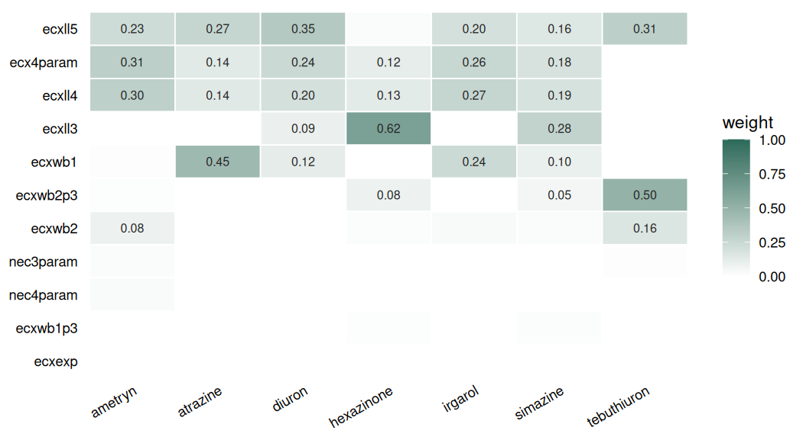
plot of chunk fig-herb-weights
The seven do not agree on which equation describes them. Tebuthiuron
puts half its weight on ecxwb2p3, which takes almost none
anywhere else, and hexazinone puts 0.62 on ecxll3, which
four of the others give nothing at all. Ametryn, irgarol and diuron each
spread their weight over three or four equations. That is the case for
fitting the levels separately rather than shrinking them towards a
common curve: the curve they would be shrunk towards is not one the data
agree on.
Toxicity estimates for the seven herbicides span two orders of magnitude. Back-transformed from the fitted scale, the N(S)EC runs from irgarol at 0.135 µg/L (0.108–0.174) and diuron at 0.151 (0.110–0.194), through ametryn at 0.196, hexazinone at 0.631 and atrazine at 1.197, to simazine at 4.349 and tebuthiuron at 10.591 (4.349–14.013).
The N(S)EC is a threshold, the concentration at which the response
first departs from the control, and it is not what Jones and Kerswell (2003) report. They report
EC50s, the concentration at which yield is halved, so the comparison
with the source study is against ecx():
ecx(fits_herb, ecx_val = 50, xform = exp)
#> level Q50 Q2.5 Q97.5
#> 1 ametryn 1.4985971 1.412824 1.603517
#> 2 atrazine 39.3270716 34.816560 44.281153
#> 3 diuron 2.0414192 1.903991 2.192404
#> 4 hexazinone 7.4219317 6.747813 8.119615
#> 5 irgarol 0.5404365 0.491021 0.599159
#> 6 simazine 123.5956229 112.483813 135.634985
#> 7 tebuthiuron 90.3189131 84.294982 95.274655Their values are irgarol 0.7 µg/L, ametryn 1.7, diuron 2.3, hexazinone 8.8, atrazine 45, simazine 150 and tebuthiuron 175. Six of the seven agree closely, the published figure sitting between 13 and 30 per cent above the one here, and the ordering of those six is the same in both. Tebuthiuron is the exception at roughly half the published value, and it is also the herbicide whose ordering differs: here it is less toxic than simazine, and in the source study more so.
The two are not derived the same way. Jones and Kerswell (2003) interpolate linearly between the tested concentrations, in ToxCalc 5.0, while the values above come from a model average over eleven fitted curves. Linear interpolation across a log-spaced series cuts the chord of a curve that is concave over that interval, which places the half-effect concentration higher than a fitted curve does, and the published value is higher in all seven. That six of the seven agree within a third is the agreement worth having. Nothing in these data settles which estimate is closer to the truth for tebuthiuron.
ggplot(group_curves(fits_herb), aes(x = x_e, colour = level, fill = level)) +
geom_polygon(aes(y = y_ci), colour = NA, alpha = 0.3) +
geom_line(aes(y = y_e), linetype = 2) +
geom_point(aes(x = x_r, y = y_r), alpha = 0.6, size = 1.2) +
geom_vline(aes(xintercept = nec_vals), colour = "grey50") +
facet_wrap(~level, ncol = 2, scales = "free_x") +
log_x +
scale_colour_hue(guide = "none") +
scale_fill_hue(guide = "none") +
theme_classic() +
theme(panel.spacing.x = unit(1.2, "lines")) +
labs(x = "Concentration (ug/L)", y = "Effective quantum yield")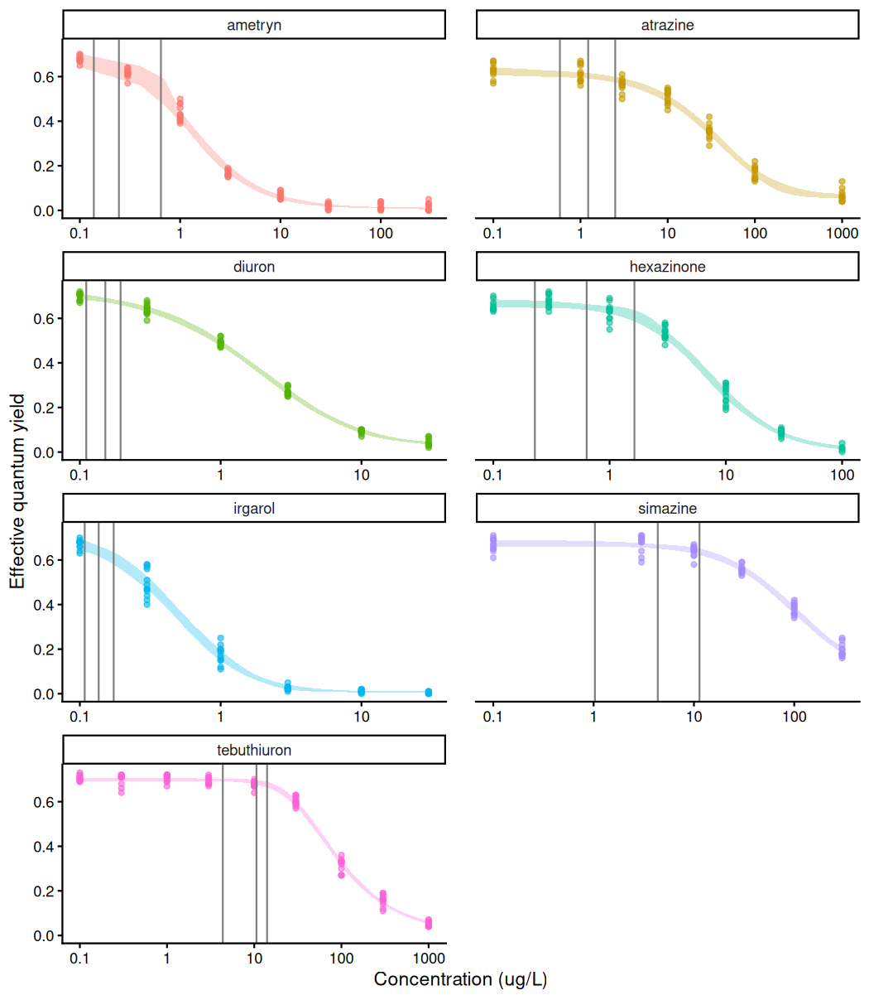
plot of chunk fig-herbicides
Yield declines with concentration in all seven, and the fitted band follows the observations down in each, with the N(S)EC rule at or a little before the concentration where the points leave the control level. The response axis is shared and the concentration axis is not, so the panels are comparable in level and not in position: the seven curves have much the same shape and sit at different concentrations. Fitting each level separately is what allows the shape to differ between them. Here it largely does not, and what separates the herbicides is where the curve falls rather than how.
cmp_herb <- compare_posterior(fits_herb, comparison = "nec")
cmp_herb$prob_diff
#> comparison prob
#> 1 ametryn-atrazine 0.019627453
#> 2 ametryn-diuron 0.841355169
#> 3 ametryn-hexazinone 0.044880610
#> 4 ametryn-irgarol 0.914739342
#> 5 ametryn-simazine 0.011626453
#> 6 ametryn-tebuthiuron 0.009501188
#> 7 atrazine-diuron 0.987248406
#> 8 atrazine-hexazinone 0.844605576
#> 9 atrazine-irgarol 0.987998500
#> 10 atrazine-simazine 0.040380048
#> 11 atrazine-tebuthiuron 0.010751344
#> 12 diuron-hexazinone 0.013626703
#> 13 diuron-irgarol 0.707463433
#> 14 diuron-simazine 0.011251406
#> 15 diuron-tebuthiuron 0.009751219
#> 16 hexazinone-irgarol 0.986873359
#> 17 hexazinone-simazine 0.016627078
#> 18 hexazinone-tebuthiuron 0.010126266
#> 19 irgarol-simazine 0.010876360
#> 20 irgarol-tebuthiuron 0.009751219
#> 21 simazine-tebuthiuron 0.076384548prob_diff gives the probability that the first level of
each pair has the higher estimate, so a value near 0 or 1 separates two
herbicides and one near 0.5 does not. Of the 21 pairs the clearest are
those against tebuthiuron, from 0.0095 for ametryn to 0.0101 for
hexazinone. The least separated is diuron against irgarol at 0.707, the
two most potent of the set, whose intervals overlap over most of their
length; the next is simazine against tebuthiuron at 0.076.
The 21 pairwise probabilities reduce seven posteriors to one number
each, and those posteriors are in posterior_data:
# Figure 11 of Fisher et al. (2024) is this display for these seven herbicides,
# and this reproduces it. The posteriors are on the fitted scale, log(ug/L), and
# exp() returns them to concentration so that the axis reads in the units the
# estimates are reported in, as every other figure here does.
herb_post <- cmp_herb$posterior_data
herb_post$value <- exp(herb_post$value)
ggplot(data = herb_post, mapping = aes(x = value)) +
geom_density(mapping = aes(group = model, colour = model, fill = model),
alpha = 0.3) +
log_x +
theme_classic() +
labs(x = "Concentration (ug/L)", y = "Density",
fill = "Model", colour = "Model")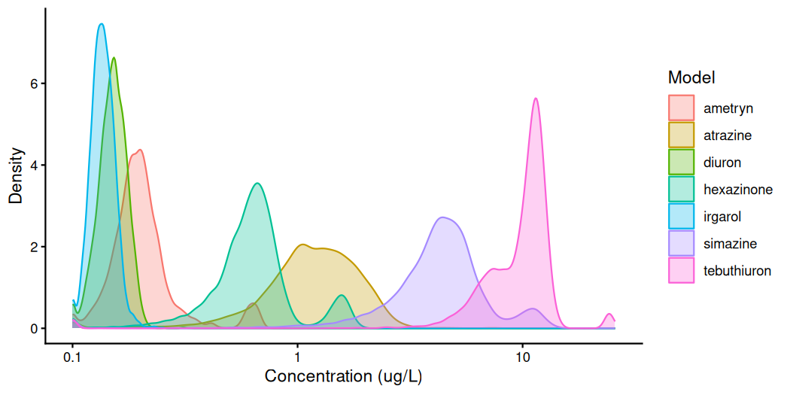
plot of chunk fig-cmp-herbicides
This reproduces Figure 11 of Fisher et al. (2024). Two things the pairwise probabilities do not say are visible in the densities.
The three most potent overlap almost entirely. Irgarol at 0.135 and
diuron at 0.151 have intervals of 0.108 to 0.174 and 0.110 to 0.194, so
one sits almost inside the other; that is what a prob_diff
of 0.707 looks like as a distribution. Ametryn at 0.196 overlaps
both.
The posteriors differ in width as much as in position. From end to end, irgarol’s interval spans a factor of 1.6 and diuron’s 1.8, against 11.0 for simazine and 7.8 for atrazine. Two herbicides an order of magnitude apart in median can still overlap, because one of them is poorly determined rather than because they are alike.
Several are bimodal. Tebuthiuron has a second mode near 2 µg/L and
hexazinone one near 1.6, which is the model-averaging mixture traced in
fit_pam: a low-weight equation placing its threshold
elsewhere, visible in the tail of the average and not in its median.
The pairing matters for what this comparison may be used on.
compare_posterior() pairs the draws of two posteriors by a
random permutation, which approximates the difference of two independent
posteriors and is valid only where the posteriors come from separate
fits. bnec_group() fits every level separately, so that
holds here.
The two bnec_group() fits in this vignette are not
screened as the five single fits above are.
check_sampling() and screen_models() do not
accept a bayesnecgroupfit, which #376 records; their
per-level diagnostics were read by hand instead. Two levels of a single
fit share draws, and permuting them discards the correlation between
them, widening the difference and pulling prob_diff towards
0.5 — so a contrast between parts of one fit needs draw-wise
differencing and must not be routed through this function.
Every fit shown was made when this vignette was precompiled, so the estimates are those of the package version it ships with. The session that produced them is recorded below.
packageVersion("bayesnec")
#> [1] '2.1.3.39'
packageVersion("brms")
#> [1] '2.23.0'
R.version.string
#> [1] "R version 4.6.1 (2026-06-24)"The fits use model = "all", which bnec()
filters to the equations valid for the family and predictor. Two calls
do not. The herbicide call uses decline, to match Figure 11
of Fisher et al. (2024). The
parameter-count contrast on coral_pam names two equations
on each side, because the contrast is the point. No call names
iter, warmup or control, so
bnec()’s defaults apply: 4 chains at 10000 iterations with
8000 warmup, under seed = 228. bnec() also
raises adapt_delta from Stan’s 0.8 to 0.99 of its own
accord wherever a constrained mean is given an unbounded group-level
term, which is every fit here except the herbicide one. That raise is
not decoration: at 0.8, ecxll5 returned 880 divergent
transitions of 16000 on the single-plate fit while holding about a fifth
of the weight, and fitted alone it returns none at 0.99.
Luter et al. (2025) sampled the
published lum31 analysis longer again, at 20000 iterations
with 19000 warmup and adapt_delta = 0.99 named
explicitly.
ecxhormebc5 is excluded before fitting wherever the
predictor reaches a negative value and the response family requires a
positive mean on an identity link. Its hormesis term
exp(slope) * x is negative wherever the predictor is, and a
starting value drawn from the prior then puts the mean below zero, which
neither a Gamma nor a Beta on an identity link can
represent. That covers every fit in this vignette on a logged predictor:
the lum31 concentrations are in mg/L and negative on the
log scale for 64 per cent of the observations, and
log(diuron_adj) is negative below 1 µg/L.
necsigm and ecxsigm are excluded on the same
predictor for a different reason, that a fractional power of a negative
number is undefined. See #344.
lum31 was built from the AIMS data repository deposit
accompanying Luter et al. (2025) by
data-raw/lum31.R. coral_colour and
coral_pam were built from the records behind Flores et al. (2021) by
data-raw/coral_diuron.R. Neither set of source records is
distributed with the package: the scripts are, and the manual pages
state what was derived and how.